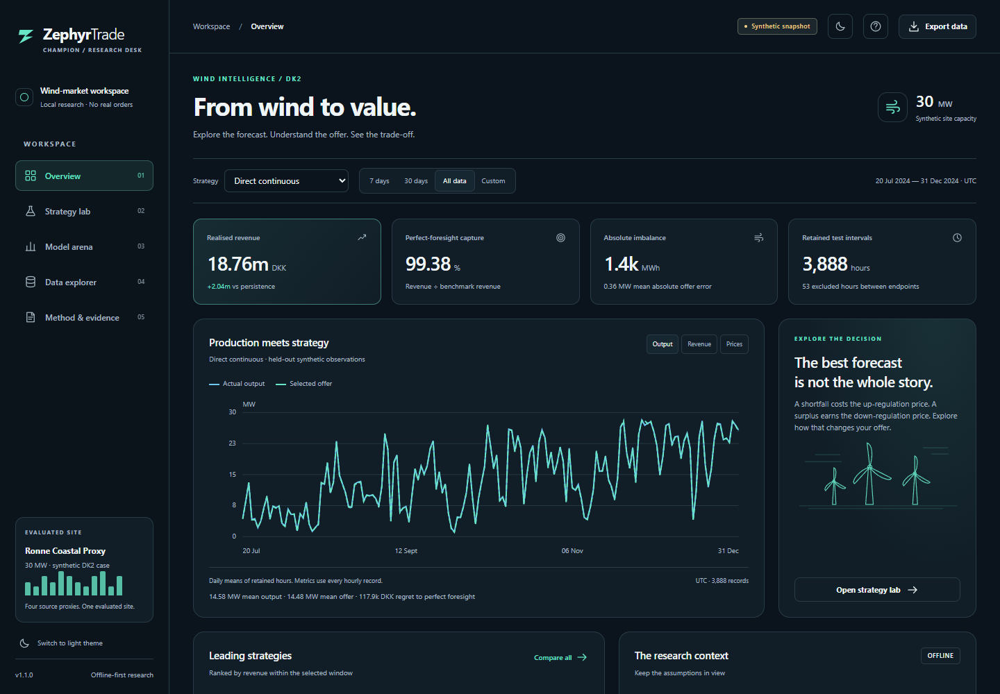
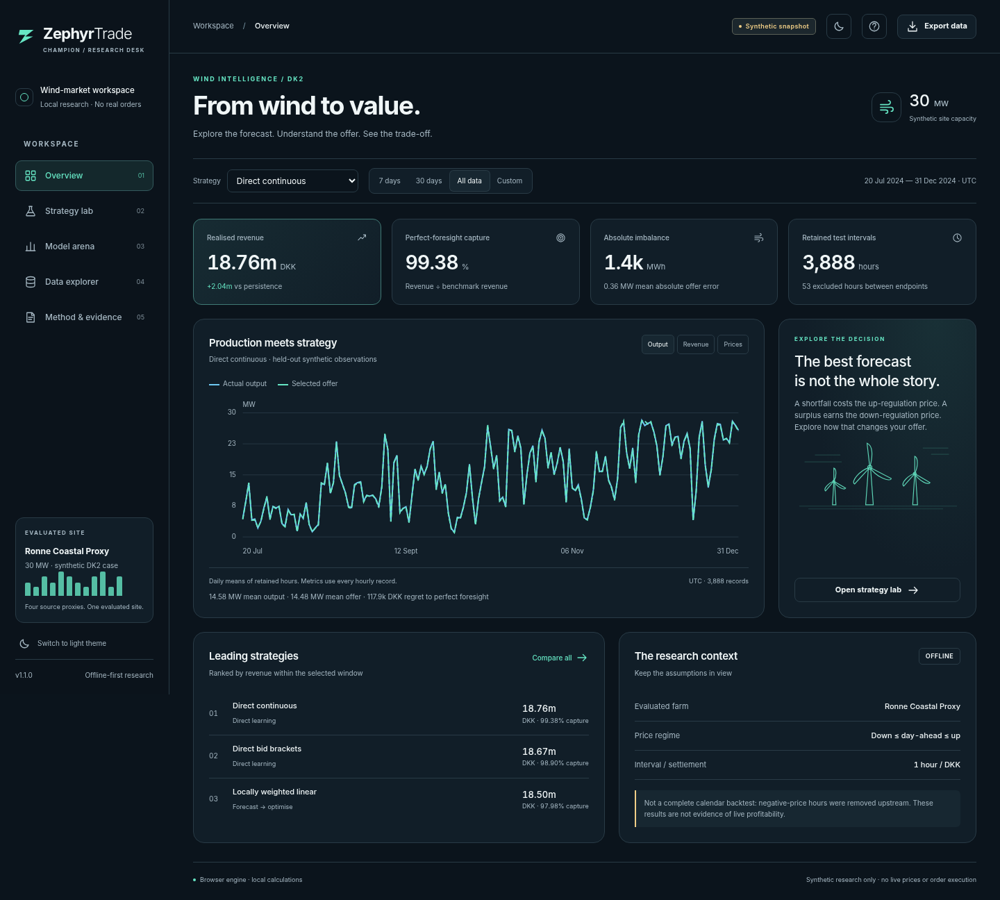

ZephyrTrade reference handbook
Inspect the model equations, reproduce the examples, and distinguish software evidence from external review and field validation.
Reviewed 2026-11-19 · Source 29abf5d8bd6f. This is a dated documentation snapshot.
Browse reference chapters
Image source: ZephyrTrade Wind-Market Lab: original vector system illustration

ZephyrTrade links synthetic wind forecasts, offer optimization, backtests, and a local browser/Python research app. The companion begins with a generic gross-versus-net calculation before the source’s asymmetric settlement model.
Native-source lesson guide · Offline interactive lab · Lesson configuration · Configuration schema
Previous animations
Open the previous-animation gallery · Local gallery
Earlier animated artwork, waveform demos, and original interactive experiences are linked alongside the current animations.
Your first interactive result
- Download or clone this repository and open
docs/index.htmlin a modern browser. - Select Module 1, apply its preset, and compare the declared checkpoint with the plotted result.
- Change one slider, inspect the model assumptions, then export the configuration or telemetry for your notes.
The browser lab runs offline with no packages, accounts, or live data feeds. Its numbers are deterministic teaching simulations. Each checkpoint states its model time and tolerance; passing it demonstrates agreement with that model, not field calibration or production readiness.
Four-module learning path
| Module | Investigation | Approximate time |
|---|---|---|
| 1. Separate forecast quality from economic value | Identify the units and objective behind a reported wind-market result. | 12 min |
| 2. Stress an economic assumption | Explain why a gross opportunity is sensitive to the cost model. | 15 min |
| 3. Separate exposure size from strategy skill | Show that scaling exposure changes money at risk without improving per-unit economics. | 18 min |
| 4. Create a source-backed offer-study record | Document scenario assumptions and distinguish numerical parity from performance validation. | 18 min |
Who this is for: Wind-energy students, forecasting researchers, and developers comparing hypothetical offer strategies.
Continue into the implementation
- README.md
- README_RESEARCH.md
- pyproject.toml
- ZephyrTrade-Champion.html
- src/zephyrtrade/optimize.py
- src/zephyrtrade/evaluate.py
- src/zephyrtrade/app.py
Explore or run the source
Node.js >=22 for the standalone preview and numerical browser tests; Python 3.11+ for the native research app and dev extra.
node scripts/preview-demo.mjs
python -m pip install -e ".[dev]"
python -m zephyrtrade.app --no-browser
node --test tests/browser/engine.test.cjsThese commands come from the audited source revision. Runtime requirements and the project's own validation limits are documented below; the standalone browser lab does not execute these commands.
The detailed project guide below remains the source for installation, supported features, licences, and scientific limits. The browser equations and laboratory settings do not change the original application or numerical engine.
Project documentation, installation, attribution, and existing validation
ZephyrTrade
Cloudflare browser edition
Open the public browser app · Purpose, usage and limits · Methodology · Build and deployment guide
Image: CI · MIT license · Verification and limits
Research application that generates synthetic wind/weather/price tables, compares wind-forecast and direct-offer strategies, backtests revenue and explores hypothetical offers without placing trades.
If ZephyrTrade helps you study this workflow, a star helps other wind-market and numerical-method researchers find it.

Try the demo
Open the hosted synthetic demo or run the identical standalone artifact locally:
Prerequisite: Node.js 22 or later; tested here with Node.js 24. This runs locally with synthetic examples. It does not connect to a live provider or publish user input.
git clone https://github.com/mohammadrezwankhan/zephyrtrade.git
cd zephyrtrade
node scripts/preview-demo.mjsOpen http://127.0.0.1:4173. Stop the server with Ctrl+C. The first screen is a demonstration, not verified current information. Keep private or real-world records out of this evaluation.
Why inspect this project?
ZephyrTrade generates synthetic wind, weather and price tables, compares forecast and direct-offer strategies, and reconciles hypothetical revenue. Its Python and browser engines expose the assumptions so a researcher can inspect numerical agreement instead of relying on a dashboard alone.
Read the engineering walkthrough and adjacent-tool comparison, or follow the source map.
- Current verification and limits
- Architecture and source map
- Contribution guide and small contribution tasks
- Security reporting, support, and roadmap
Develop and verify
Install ZephyrTrade with its Python development extras in an isolated environment; follow the detailed guide below. The browser numerical tests use Node.js and the Python parity check uses the same installed package.
python -m pytest
python -m ruff check src tests
node --test tests/browser/engine.test.cjs
python scripts/verify_engines.py
python -m buildPrior reports under docs/ describe the supplied candidate. They do not replace the current quality report. Passing software checks is not clinical, educational, financial, safety, or production-service validation.
License and scope
First-party source is available under MIT. Bundled dependencies retain their upstream notices; trademarks and third-party content are not relicensed.
Supplied engineering guide, product boundaries, and detailed usage
ZephyrTrade Champion
A local wind-market research desk • candidate 1.1.0
Explore the supplied synthetic backtest, compare nine strategies and calculate scenario-based offers. There are no live prices, real orders, broker connections, accounts, external analytics, remote fonts or CDNs in this app.

Start with the portable app — no installation
Extract the ZIP, then open ZephyrTrade-Champion.html in a current desktop browser. Windows also has OPEN_CHAMPION_WINDOWS.bat. The single HTML contains the interface, calculations and validated observation snapshot; keep it in a stable folder. JavaScript must be enabled. Do not open the separate source web/index.html in isolation: use the complete portable HTML or the Python launcher.
Use Overview for strategy/date filters and output, cumulative-revenue and price charts. Strategy lab calculates an offer from editable assumptions, saves named scenarios and exports/imports JSON. Model arena compares all nine strategies. Data explorer exposes retained hourly observations and CSV exports. Method & evidence explains the data provenance, exclusions, units and limits.
Saved scenarios use browser-local storage, not a cloud account. Private mode, enterprise policy, file relocation or clearing browser data can affect persistence. Export scenario JSON backups. An unavailable save is reported as an error. Draft inputs are retained while moving between app pages, but are not automatically written to disk and can be lost on closing/reloading the page. Recalculate edited inputs before saving or exporting a result.
Optional: use the real Python / SciPy cross-check
The portable app already calculates an optimal weighted-quantile offer in JavaScript. The Python service adds a separate SciPy linear-program cross-check on your machine. It does not train a new model when filters change.
On Windows, run START_PYTHON_WINDOWS.bat. It requires Python 3.11+ and creates a new .venv-champion environment; first setup needs internet package access. The launcher does not modify or reuse the uploaded .venv. Windows launcher execution was not available in the Linux verification environment.
On macOS/Linux, run sh start-python.sh, or install manually:
python3 -m venv .venv-champion
. .venv-champion/bin/activate
python -m pip install -e .
python -m zephyrtrade.appManual Windows activation uses .venv-champion\Scripts\activate.bat in Command Prompt. After startup, open http://127.0.0.1:8765. The app opens a browser where the operating system supports that operation. Keep the terminal open; use Ctrl+C to stop. A busy port can be avoided with python -m zephyrtrade.app --port 8766. --no-browser starts the server without requesting a browser window.
Do not expose this server to the internet or put it behind a public tunnel. It is a local, single-user research server, not a production hosting architecture. No authentication system is provided because no shared or public service is in scope.
What is preserved, and what is new?
The original NumPy/pandas/scikit-learn/SciPy research pipeline, synthetic data, chronological splits and supplied model outputs remain. The original README is retained, unchanged, as README_RESEARCH.md. Historical reports under docs/ describe the uploaded research run, not the new verification run.
New: the browser app, loopback API, scenario validation, recoverable UI states, source-backed snapshot compiler, launchers and tests. Focused Python repairs address undefined revenue capture, single-row R², nonfinite inputs, invalid probabilities, class IDs and a quantile-rounding boundary error. See the audit and verification report.
One explicit API contract change: revenue_capture_pct is None when the benchmark is not positive, and single-observation r2 is None. Callers must handle undefined metrics rather than treating them as zero. Ordinary positive-benchmark calculations and valid multi-row metrics are preserved.
Data boundary
The interface contains 3,888 retained hourly test observations, nine strategies, one 30 MW synthetic Ronne Coastal Proxy site and two source-file SHA-256 hashes. The test snapshot spans 20 July–31 December 2024 UTC; it is not current market data. There are 53 absent hours between endpoints. The original pipeline removed 319 negative-price hours across its full generated source period. It is not an unfiltered calendar backtest. The sandbox allows negative prices under the stated price-order assumptions, but that does not restore omitted backtest observations.
Perfect foresight knows actual production and is an analytical benchmark, not an operational forecast. Forecast issuance, gate-closure availability, current market rules, transaction costs and real settlement data are not validated. Synthetic capture percentages do not establish investable or live trading performance.
Verification and known limits
- 86 Python tests pass with warnings treated as errors, including real local HTTP requests.
- 13 JavaScript numerical test cases pass; 120 seeded scenarios agree with SciPy to less than 0.000001 DKK in objective value.
- 23 Chromium UI-harness checks pass across 320–1440 CSS-pixel layouts. Screenshots are of the implemented app.
- All 34,992 saved strategy revenue values reconcile with recomputation; largest difference is approximately 3.64e-12 DKK.
The test browser's administrator policy blocked direct file and localhost navigation. UI checks therefore render the shipped HTML with Playwright set_content and use an explicit in-memory Storage double. Native durable browser storage, direct file opening and browser-to-Python integration still need a normal-browser check. Python HTTP and browser calculations were tested separately; this is not a claim of full hosted E2E.
A new bounded training smoke completed using the normal Phase 2 and a reduced Phase 3 grid. Four Lasso convergence warnings are retained in its log. The default full-grid pipeline exceeded the 120-second test limit and is not verified end to end here. The supplied multi-year models were not retrained or replaced.
Ruff and the build frontend could not be installed in this environment. Do not read this delivery as a passing hosted CI, complete WCAG conformance, security certification, human UAT sign-off or production release. Detailed status and evidence are in docs/champion/. This is a local research release candidate, not a deployed product.
Reproduce the checks
Install .[dev] in a development environment with package access. Node is only needed for JavaScript tests and parity verification, not to use the app.
python -m pytest -W error
node --test tests/browser/engine.test.cjs
python scripts/verify_engines.py
python scripts/build_app.py
python -m ruff check src tests
python -m ruff format --check src tests
python -m buildThe optional browser harness requires Playwright and Chromium: python scripts/check_browser.py --chromium /path/to/chromium. It documents its Storage test double and navigation limitations in its output. For a bounded fresh training check, choose a new directory: python scripts/smoke_research.py --output /tmp/zephyr-new-smoke.
To reproduce the original full research workflow, follow README_RESEARCH.md; it is computationally heavier than browsing the packaged snapshot. Use new output directories rather than overwriting the supplied evidence. requirements-tested.txt records observed scientific-package versions; it is not a cross-platform resolved lockfile.
Licence and distribution
The supplied project has an MIT licence, retained in LICENSE. New app icons, CSS, SVG diagrams and interface code are original and use that project licence. No font files, model-environment executables or third-party frontend bundles are included. The root ZIP includes the original datasets and reports. The wheel is a Python app package with its precompiled web snapshot, not a standalone Windows executable.
Image: MKLab app directory Open ZephyrTrade in MKLab Traceability checks and source-observation scope
Source-pinned reference package · 19 November 2026
The complete documentation index and reference handbook add developer, maintainer and owner guidance for source 29abf5d8bd6f05b1f0c027d8753f4837840215dc. Read the native interfaces and controls, worked examples, equations and units, verification ledger and twelve-month proposals.
The dated local observations include 255 Python tests plus 54 subtests, 58 distinct native JavaScript tests, 120 numerical parity cases, a new bounded research smoke, static export checks and four numerical labs. Initial test/lint environment failures are retained; Chromium could not launch, so no fresh visual/browser acceptance is claimed. Historical counts, screenshots and results above remain their original observations. Source CI, candidate checks, merge and publication are separate outcomes.
The native wind model uses synthetic MW/MWh and DKK settlement; the companion remains a separate USD/basis-point teaching proxy. Neither proves live profitability or submits orders. A demonstrated low-level probability-mass inconsistency is documented as debt; normalized UI/API behavior and all numerical code remain unchanged.
Canonical file: README.md · Back to guide navigation
Contributing to ZephyrTrade
Contributions should preserve chronological evaluation, physical feasibility, and reproducibility. Do not introduce random train/test shuffling or use realized delivery information as an inference feature.
Development setup
python -m venv .venv
python -m pip install --upgrade pip
python -m pip install -e ".[dev]"Before submitting a change, run:
python -m ruff format --check src tests
python -m ruff check src tests
python -m pytest -W error
python -m buildNew public functions require concise docstrings. Behavioral changes require tests, and changes to data or artifact contracts require corresponding README and report updates. Generated files under data/ and artifacts/ should not be committed; publication figures may be committed when the reported default experiment changes.
Research changes
Document the information set available at bid time, selection interval, test interval, random seed, settlement assumptions, and any price filtering. Report both predictive and economic metrics. A new trading policy must enforce capacity bounds and should be compared on the existing common test timestamps.
Real-data pull requests must describe licensing, retrieval time, forecast vintage, timezone, market resolution, missing-data handling, and whether later provider revisions can alter historical observations. Never commit credentials, commercial telemetry, or data whose redistribution terms are unclear.
Documentation and evidence additions · 19 November 2026
Use the current source contracts and docs maintenance runbook when reviewing changes. Keep source/tested/candidate/merged/deployed identities distinct. Record actual commands, versions, failures, scopes and tolerances; a successful install, AST parse or source baseline is not a fresh browser or scientific validation.
For a documentation-only change, preserve application/scientific code, test assertions, workflow gates, dependencies, license and existing evidence. Add runnable bounded examples with new output paths. Regenerate the scriptless handbook with python docs/reference/build_reference.py, then verify --check, internal navigation, source locators and citation schema. Obtain independent review of the frozen diff. Proposed numerical repairs in the roadmap require separate behavior tests and review before implementation.
The evidence ledger records a local clean-plugin pytest run and a nested audit dependency install after first-attempt failures. Reproduce the root cause before applying those environment adjustments elsewhere; never weaken tests or erase original failures.
Canonical file: CONTRIBUTING.md · Back to guide navigation
Source preview: 2026-09-30
preview-2026.09.30
- Preserve the supplied baseline and add scoped build, server and dependency repairs.
- Add a tested local demo launcher, actual desktop/mobile screenshots, domain architecture, source guide and contribution resources.
- Record executed CI and clean-clone evidence in QUALITY_REPORT.md.
- Keep synthetic-data, operational, accessibility and research limitations explicit. This snapshot is a prerelease, not a stable-service claim.
Champion 1.1.0 — local research candidate
Adds the offline research interface, optional loopback SciPy API, focused numerical boundary repairs, validation and export workflows. See docs/champion/AUDIT_AND_RELEASE.md for evidence and limits. No production release occurred.
Changelog
All notable changes to ZephyrTrade are documented in this file.
The project follows semantic versioning.
1.0.0 - 2026-07-13
Added
- Deterministic synthetic data for four Bornholm wind-farm proxies and DK2 market prices, including negative-price filtering and provenance.
- Leakage-safe lagged, rolling, climate, directional, and calendar features.
- Explicit stochastic trading LP and exact critical-fractile offer solution.
- OLS, batch gradient descent, polynomial, locally weighted, Ridge, Lasso, and k-means local regression models.
- Direct continuous offer regression and probabilistic bid-bracket classification.
- Chronological statistical and realized-revenue backtests with publication figures and interval-level audit artifacts.
- One-command pipeline with environment metadata and SHA-256 output hashes.
- Automated tests, Ruff quality gates, GitHub Actions CI, final report, citation metadata, and MIT license.
Research limitations
- Default observations and profitability results are synthetic.
- Negative prices are filtered to follow the project specification.
- The indirect backtest uses realized prices ex post.
- The perfect-foresight direct target equals realized production under the maintained single-scenario price ordering.
Unreleased documentation snapshot · 2026-11-19
Added a source-pinned developer/science/maintainer/owner reference package, numerical examples, explicit API/browser/teaching boundaries, verification limits, recovery guidance and a proposed twelve-month roadmap. Added a static handbook reading view through existing documentation navigation. Preserved the original application, numerical algorithms, result data, workflows, dependencies, license, citation authorship and security policy.
The local documentation effort records new source checks and bounded examples; it does not recreate the historical full training experiment. The recorded Chromium attempt was blocked before page load. Commit, independent review, candidate CI, merge and publication receipts remain separate integration records. This entry does not create a release/tag, change package 1.1.0 or replace the existing CFF preview identity. See the evidence ledger.
Canonical file: CHANGELOG.md · Back to guide navigation
Citation metadata
Existing CFF, preserved verbatim:
cff-version: 1.2.0
message: "If you use ZephyrTrade, please cite this software."
title: "ZephyrTrade Champion: local research candidate"
type: software
version: "preview-2026.09.30"
date-released: 2026-09-30
license: MIT
authors:
- name: "ZephyrTrade contributors"
repository-code: "https://github.com/mohammadrezwankhan/zephyrtrade"Canonical file: CITATION.cff · Back to guide navigation
Security policy
The current default branch is the supported development line for this demo/research project. It is not a hosted production service. Use fictional data and loopback access; browser storage and exported files may be readable by other software on your device.
Report vulnerabilities using GitHub private vulnerability reporting. If that route is unavailable, use an existing trusted private contact with the repository owner. Do not disclose exploit details in a public issue before a private channel is established. Never attach keys, personal records, private addresses, session exports or confidential source material publicly.
Include the affected commit, a synthetic reproduction, impact and proposed mitigation. Maintainers will coordinate disclosure after assessment; no unverified response-time promise is made. Dependency/secret-scan evidence appears in QUALITY_REPORT.md and does not constitute a penetration test or production approval.
Canonical file: SECURITY.md · Back to guide navigation
ZephyrTrade roadmap
- Reproduce the documented source checks and close remaining issues in QUALITY_REPORT.md.
- Verify native-origin reload, export/restore and keyboard behavior around the primary ZephyrTrade workflow, with fictional inputs.
- Obtain domain and Bangla/English review before expanding the supplied catalogue or instructional content.
- Keep live-data adapters, accounts, delivery, clinical/safety decisions and paid integrations out of scope until a separate design has source, rights, privacy and accountable operational owners.
No dates or service commitments are implied. Propose changes with acceptance criteria and evidence.
Evidence-linked twelve-month plan · 2026-11-19 to 2027-11-18
This is a proposed development plan anchored to the documentation task date, not a claim that future work is already implemented or staffed. The original roadmap above remains unchanged. The window covers twelve calendar months, including partial 2026 Q4 and partial 2027 Q4. Roles and effort ranges are suggestions in engineering days; access/review lead time is separate. Source is 29abf5d8bd6f05b1f0c027d8753f4837840215dc unless a current documentation page is identified.
The near-term priorities are the demonstrated low-level probability contract, missing native-browser evidence, clean environment replay and inaccessible delivery policy. Research expansions depend on information timing and retained-data provenance. No new accounts, live broker, hosting, measured-data ingestion, tag or application change is authorized by this plan itself.
Now · 2026-11-19 through 2026-12-31 (Partial 2026 Q4)
ZT-N01 — Make probability mass a deliberate library contract
defect · P1 · Proposed owner: Numerical maintainer · Effort: 2–4 engineering days · Confidence: High: exact source counterexample.
Evidence: Direct LP accepts weight 1.000005 without normalization; LP 500 DKK differs from full expected revenue 500.0025 DKK. The API rejects the example. src/zephyrtrade/optimize.py:97–168
Outcome: Choose reject-versus-normalize semantics for the low-level solver and evaluator, document migration, and implement it only in a separate numerical PR.
Dependencies: None beyond ordinary maintainer review. Risk/assumption: Changing permissive behavior can break library callers; no evidence currently shows the normalized UI pipeline failing.
Acceptance:
- Boundary fixtures cover mass below/above 1, individual limits, zero weights and negative/nonfinite inputs.
- Accepted normalized cases agree between LP and full expected revenue to the declared tolerance.
- API/browser behavior and tie policy are explicitly preserved or deliberately versioned.
Verification: Independent review of contract and tests; run existing optimize/evaluate/native parity suites plus new focused mass-boundary cases. Milestone: proposed Now review by 2026-12-31.
ZT-N06 — Close native-origin browser evidence gaps
verification · P1 · Proposed owner: Browser QA maintainer · Effort: 2–4 days · Confidence: High: known capability gap.
Evidence: The local Chromium process failed before page load; source workflows declare three-browser testing. tests/browser/audit/playwright.config.ts:1–53
Outcome: Use a capable runner to exercise the existing audit with exact final runtime hash and native file/HTTP origin cases.
Dependencies: None beyond ordinary maintainer review. Risk/assumption: Browser storage, permissions and platform differences may reveal issues invisible to Node tests; no screenshots should be synthesized as evidence.
Acceptance:
- Chromium/Firefox/WebKit results retain exact versions, commands, source/build hash and failures.
- Save/reload/export/restore, storage denial, stale results, keyboard dialogs and mobile chart/table controls are exercised.
- Manual visual/assistive review limits remain separate from automated passes.
Verification: Run existing browser audit and focused native-origin acceptance; retain real screenshots and trace/run identities. Milestone: proposed Now review by 2026-12-31.
ZT-N07 — Publish a clean environment replay recipe
maintenance · P1 · Proposed owner: Toolchain maintainer · Effort: 1–3 days · Confidence: High: observed setup failures.
Evidence: Reference pins target Linux/Python 3.13.5; local test interpreter was 3.12.14. Host plugin autoload and missing nested audit dependencies caused retained first failures. requirements-tested.txt:1–9
Outcome: Document or automate an isolated clean-room replay that reports actual versions and installs each declared Node project.
Dependencies: None beyond ordinary maintainer review. Risk/assumption: Dependency availability and supported wheel platforms may vary; preserve broad support separately from a tested matrix.
Acceptance:
- Actual Python 3.13.5 and all seven scientific pins are verified in the reference job.
- A clean environment executes warnings-as-errors tests without unrelated plugin contamination.
- Nested audit lock install and root quality commands are reproducible without changing manifests merely to silence failures.
Verification: Independent clean-environment run with pip check/freeze and lockfile hashes; compare with source workflow commands. Milestone: proposed Now review by 2026-12-31.
ZT-N10 — Resolve delivery-policy and publication evidence
delivery · P1 · Proposed owner: Repository and hosting maintainer · Effort: 1–3 days plus external access lead time · Confidence: Medium: permissions external.
Evidence: Classic branch policy returned 403; Pages metadata route was unavailable. Visible rulesets and historical source checks are only partial delivery evidence. .github/workflows/deploy-dashboard.yml:61–93
Outcome: Obtain supported read access or authenticated owner evidence, then verify reviewed candidate checks, expected-head merge and existing-route deployment identity.
Dependencies: None beyond ordinary maintainer review. Risk/assumption: Required human review, queue or protected environment may prevent autonomous completion; never bypass them.
Acceptance:
- Full effective branch/review/check policy is recorded for the intended head/base.
- Any merge uses an expected-head guard and records actual merged SHA.
- Published handbook content and deployment/build identity match the merged revision; otherwise status stays explicitly unverified.
Verification: Provider metadata plus complete PR diff/check reconciliation and canonical-site distinctive-content inspection. Milestone: proposed Now review by 2026-12-31.
Next · 2027-01-01 through 2027-03-31 (2027 Q1)
ZT-N02 — Specify information available at bid time
research contract · P1 · Proposed owner: Forecasting researcher and domain reviewer · Effort: 5–10 days · Confidence: Medium: requires domain assumptions.
Evidence: Climate columns are synthetic forecast-time proxies; current ex-post optimization uses realized test prices. src/zephyrtrade/preprocessing.py:20–60
Outcome: Define forecast issue/valid timestamps, price-information assumptions and an explicit prospective-versus-ex-post experiment contract.
Dependencies: ZT-N07. Risk/assumption: Realistic forecast-vintage data may be unavailable or separately licensed; do not imply that a schema alone removes leakage.
Acceptance:
- Every prospective input has an issuance/availability rule relative to bid time.
- Synthetic fixtures deliberately include late-arriving/revised inputs and reject forbidden information.
- Reports label oracle/ex-post and prospective experiments separately.
Verification: Domain-reviewed data contract, timestamp assertions and chronological leakage counterexamples in a separate research branch. Milestone: proposed Next review by 2027-03-31.
ZT-N03 — Quantify negative-price filtering sensitivity
research · P1 · Proposed owner: Energy-market researcher · Effort: 5–8 days · Confidence: Medium: experiment outcome unknown.
Evidence: All negative-price market rows are removed upstream, while ordered negative prices are valid in the offering engine. src/zephyrtrade/data_loader.py:361–380
Outcome: Run paired synthetic all-hours and filtered scenarios with consistent calendar alignment, published assumptions and distinct retained baselines.
Dependencies: ZT-N02, ZT-N07. Risk/assumption: Changing the sample population can change rankings; market price-order violations require a separately designed model rather than forced validation.
Acceptance:
- Both experiment populations and missing/filtered intervals are enumerated.
- Metrics disclose calendar coverage, price regime, duration and strategy information set.
- Original archived results remain immutable and new outputs have source/config/environment identities.
Verification: Calendar-join audit, native settlement/parity fixtures and paired report with input hashes; no real-profitability inference. Milestone: proposed Next review by 2027-03-31.
ZT-N04 — Make the indirect comparison identity explicit
engineering · P2 · Proposed owner: Research pipeline maintainer · Effort: 2–4 days · Confidence: High: fixed source column.
Evidence: Phase 3 always loads locally_weighted_offer_mw; the fresh bounded run selected Lasso in Phase 2. src/zephyrtrade/phase3.py:283–333
Outcome: Add a separately reviewed explicit comparator configuration/result field if flexibility is desired, preserving the fixed-LW historical experiment.
Dependencies: ZT-N01. Risk/assumption: Dynamic selection on held-out test revenue would introduce selection bias; comparator choice must precede test comparison.
Acceptance:
- Reports state comparator model ID, selection data and prediction source hash.
- Missing, mismatched or misaligned comparator columns fail clearly.
- Default historical LW behavior remains reproducible and optional alternatives are separately labeled.
Verification: Focused configuration/alignment tests and a bounded experiment demonstrating default and declared alternative without test-set selection. Milestone: proposed Next review by 2027-03-31.
ZT-N05 — Align documented boundary tests across surfaces
contract tests · P2 · Proposed owner: API and browser maintainer · Effort: 3–6 days · Confidence: High: observable surface differences.
Evidence: Python API rejects unknown/duplicate keys and numeric strings; browser import projects fields and JSON.parse accepts duplicates; low-level revenue helpers accept broader domains. src/zephyrtrade/app.py:38–100
Outcome: Build a deliberate surface-contract matrix and fixtures; decide explicitly which differences remain supported.
Dependencies: ZT-N01, ZT-N06. Risk/assumption: A universal strictness change could silently invalidate existing imports; library and transport layers have different purposes.
Acceptance:
- Each HTTP/browser/library input boundary has an expected outcome and source-linked fixture.
- Duration, price order, capacity, probability tolerance and unknown/duplicate fields are represented.
- Import recalculation, stale results and objective tie handling remain verifiable.
Verification: Targeted API/native-engine/import tests plus capable-browser evidence, keeping numerical and transport assertions separate. Milestone: proposed Next review by 2027-03-31.
Later · 2027-04-01 through 2027-06-30 (2027 Q2)
ZT-N11 — Evaluate forecast and economic uncertainty
research · P2 · Proposed owner: Statistical researcher · Effort: 8–15 days · Confidence: Medium-low: outcomes exploratory.
Evidence: Validation residual quantiles and point metrics do not by themselves establish calibrated forecast intervals or stable economic rankings. src/zephyrtrade/phase2.py:500–579
Outcome: Design chronological residual-calibration, sensitivity and ranking-uncertainty experiments with predeclared metrics and computational budget.
Dependencies: ZT-N02, ZT-N03. Risk/assumption: Autocorrelation and filtered uneven timestamps can invalidate naive independent bootstrap assumptions.
Acceptance:
- Resampling/holdout methodology states time dependence and equal-calendar comparability assumptions.
- Forecast calibration and economic sensitivity are reported separately.
- All intervals, seeds, populations and failed hypotheses are retained without claiming production performance.
Verification: Reviewed statistical protocol, bounded synthetic controls with known behavior and independently inspected result tables. Milestone: proposed Later review by 2027-06-30.
ZT-N08 — Improve recoverable experiment manifests
maintenance · P2 · Proposed owner: Reproducibility maintainer · Effort: 3–6 days · Confidence: High: current manifest scope explicit.
Evidence: The run manifest hashes four summaries/provenance files; original full raw/processed tables are not all retained. src/zephyrtrade/pipeline.py:91–172
Outcome: Define full retained-versus-regenerable artifact accounting and a safe recovery procedure with exact environment/config identities.
Dependencies: ZT-N07. Risk/assumption: Large artifacts and serialization compatibility raise storage and security costs; a plain digest does not authenticate origin.
Acceptance:
- Every retained output has a path/type/size/hash and provenance relationship.
- A clean recovery drill verifies selected numerical outputs with declared tolerances.
- No untrusted joblib/pickle loading is required; historical artifacts remain intact.
Verification: Manifest completeness checks and a bounded clean-room regeneration/restore drill with actual records. Milestone: proposed Later review by 2027-06-30.
ZT-N12 — Review teaching transfer and terminology
documentation · P2 · Proposed owner: Teaching maintainer and domain/language reviewers · Effort: 3–7 days · Confidence: Medium: reviewers not assigned.
Evidence: Companion USD/bps and native DKK/MWh engines are intentionally distinct; original roadmap requests domain and Bangla/English review. docs/lesson-config.json:1–317
Outcome: Review lesson language, numerical checkpoints, source-pin boundaries and learner transfer into the native model.
Dependencies: ZT-N06, ZT-N05. Risk/assumption: Translated terms can blur offered power, energy, cost and oracle metrics; review availability is not assured.
Acceptance:
- Every exercise identifies its model, units, time and calibration status.
- All eight current numeric checkpoints retain explicit tolerance and source evidence.
- Language/domain feedback is documented without representing teaching completion as certification.
Verification: Independent terminology review, source-model checkpoint checks and recorded learner walkthrough on capable browsers. Milestone: proposed Later review by 2027-06-30.
ZT-N13 — Keep documentation drift detectable
documentation tooling · P2 · Proposed owner: Documentation maintainer · Effort: 2–4 days · Confidence: High: isolated renderer exists.
Evidence: Multiple historical reading surfaces and generated handbook can diverge from current source without explicit identity checks. current documentation runbook
Outcome: Maintain narrow source-locator, required-output, handbook-freshness and interface-accounting checks without broadening application CI unnecessarily.
Dependencies: ZT-N04, ZT-N08. Risk/assumption: Mechanical link checks cannot validate equations or scientific interpretation; avoid treating coverage counts as semantic proof.
Acceptance:
- Current-source paths/line ranges and canonical links resolve.
- Handbook generation is deterministic and preserves safe image/CSP behavior.
- Generated/vendor/media and unresolved dynamic interfaces remain visibly classified.
Verification: Focused docs validator negative controls, independent semantic review and full authorized-diff inspection. Milestone: proposed Later review by 2027-06-30.
Horizon · 2027-07-01 through 2027-11-18 (2027 Q3 and partial Q4)
ZT-N14 — Assess a measured-data adapter without premature integration
exploratory design · P3 · Proposed owner: Data steward and energy-domain owner · Effort: 5–10 days for assessment only · Confidence: Low: rights/access/forecast-vintage unresolved.
Evidence: Current public provider URLs are references; no measured-data adapter or redistribution right is established. src/zephyrtrade/data_loader.py:413–504
Outcome: Evaluate one candidate provider contract and document access rights, schema versions, revision history and a synthetic adapter test design before proposing implementation.
Dependencies: ZT-N02, ZT-N03, ZT-N08. Risk/assumption: A provider may not supply historical forecast vintages or redistribution rights; outcome may be a justified no-go.
Acceptance:
- Access/redistribution terms and exact dataset/schema/resolution are recorded from authoritative current evidence.
- Issue/valid time, DST, missing-data and revision policies have testable definitions.
- Decision explicitly approves a separately scoped implementation or records why no integration should proceed.
Verification: Primary-source rights/schema review and synthetic contract fixtures; no credentials or measured records committed by this assessment. Milestone: proposed Horizon review by 2027-11-18.
ZT-N15 — Test transfer across synthetic farms and regimes
research · P3 · Proposed owner: Forecasting researcher · Effort: 8–15 days · Confidence: Medium-low: hypotheses exploratory.
Evidence: Generator has four site proxies while the current default evaluated farm is Ronne Coastal. src/zephyrtrade/data_loader.py:37–87
Outcome: Design farm-separated and regime-shift comparisons using declared capacity/weather differences and fixed evaluation contracts.
Dependencies: ZT-N11, ZT-N03. Risk/assumption: Synthetic diversity is not geographic or operational external validation; shared generator assumptions can dominate results.
Acceptance:
- Train/selection/test farms, dates and regimes are explicit and disjoint where intended.
- Per-farm capacity, time and price rules remain consistent.
- Report failures and uncertainty, without claiming measured-site generalization.
Verification: Independent experiment protocol, leakage tests, reproducible run manifests and reviewed per-regime tables. Milestone: proposed Horizon review by 2027-11-18.
ZT-N09 — Prepare an evidence-based release decision
release planning · P2 · Proposed owner: Repository maintainer · Effort: 2–5 days plus required reviews · Confidence: Medium: downstream gates external.
Evidence: Package version 1.1.0 and CFF preview-2026.09.30 refer to different records; local build is not published release evidence. CITATION.cff:1–10
Outcome: Reconcile actual version/tag/assets/citation records and propose a release only when required policy, browser/recovery and provenance gates are met.
Dependencies: ZT-N06, ZT-N08, ZT-N10, ZT-N13. Risk/assumption: Required reviewers or hosting gates may remain unavailable; no schedule or new tag is preauthorized by this roadmap.
Acceptance:
- A proposed release packet maps actual package, commit, tag, CFF, artifacts and test evidence.
- Required policy and human/independent approvals are satisfied or explicit blockers remain.
- No production/market validation language exceeds evidence; a no-release decision is valid.
Verification: Read-only release packet review first; any later release action requires its own authorized workflow and receipts. Milestone: proposed Horizon review by 2027-11-18.
ZT-N16 — Review outcomes and roll the next annual plan
governance · P2 · Proposed owner: Repository owner with maintainers · Effort: 1–3 days · Confidence: High: review process feasible.
Evidence: The original roadmap is intentionally undated; this package adds proposed evidence-linked sequencing with no staffing guarantee. ROADMAP.md:1–8
Outcome: Review delivered, deferred, rejected and blocked items; update the next twelve-month plan from actual results.
Dependencies: ZT-N09, ZT-N12, ZT-N15. Risk/assumption: Unfinished dependency work must not be relabeled complete to meet calendar targets.
Acceptance:
- Each item has a dated outcome and supporting PR/run/review or explicit deferral.
- Public portfolio status separates content, CI, merge and publication and excludes private information.
- Next roadmap preserves unresolved scientific and access assumptions and assigns proposed roles.
Verification: Owner review of evidence ledger and actual repository delivery outcomes; no automatically scheduled notification is created. Milestone: proposed Horizon review by 2027-11-18.
Monthly evidence checkpoints
These are planning checkpoints, not automated reminders or promised releases. Record actual progress against dependencies; carry unresolved items forward transparently.
| Month window | Evidence to review |
|---|---|
| 2026-11-19–2026-12-18 | Probability contract, clean replay and capable-browser plan |
| 2026-12-19–2027-01-18 | Delivery-policy evidence and forecast-time contract draft |
| 2027-01-19–2027-02-18 | Input availability fixtures and all-hours/filtered experiment design |
| 2027-02-19–2027-03-18 | Comparator identity and cross-surface contract outcomes |
| 2027-03-19–2027-04-18 | Research protocol and experiment-manifest scope |
| 2027-04-19–2027-05-18 | Recovery drill and chronological uncertainty controls |
| 2027-05-19–2027-06-18 | Teaching/language review and documentation drift checks |
| 2027-06-19–2027-07-18 | Measured-data feasibility/rights decision prerequisites |
| 2027-07-19–2027-08-18 | Farm/regime transfer experiment evidence |
| 2027-08-19–2027-09-18 | Scientific uncertainty and unclosed browser/provenance gaps |
| 2027-09-19–2027-10-18 | Proposed release packet or explicit no-release decision |
| 2027-10-19–2027-11-18 | Actual outcomes, remaining blockers and next annual plan |
Cross-repository runtime dependencies are not assumed. The established public portal/traceability mapping is documented in portfolio integration; any future shared schema or data adapter needs its own reviewed contract. The debt ledger and verification ledger supply the current evidence, including failed or unavailable checks.
Canonical file: ROADMAP.md · Back to guide navigation
ZephyrTrade documentation index
Source reviewed: 29abf5d8bd6f05b1f0c027d8753f4837840215dc · Roadmap anchor: 2026-11-19.
Read the reference handbook for a single scriptless reading view, or choose a canonical file below. The documentation distinguishes implemented contracts, declared configuration, observed tests, historical evidence, proposals and unknowns. Original project prose, citation and security policy remain intact.
Canonical package
| File | Purpose |
|---|---|
| README.md | Preserved project introduction/history with dated current-source navigation and evidence boundaries. |
| CONTRIBUTING.md | Preserved contribution policy plus documentation and reproducibility review procedure. |
| CHANGELOG.md | Preserved actual history plus an unreleased documentation entry, with no fabricated release. |
| CITATION.cff | Preserved CFF 1.2.0 contributor/preview metadata; schema and semantic checks required. |
| SECURITY.md | Preserved original reporting channel, supported-development scope and local-data policy. |
| ROADMAP.md | Preserved generic roadmap plus twelve-calendar-month evidence-linked proposals. |
| docs/INDEX.md | Complete canonical reading map with explicit existing-surface boundaries. |
| docs/developer/ARCHITECTURE.md | Native research/data/browser/HTTP flows and separate teaching surfaces. |
| docs/developer/SETUP_AND_REPRODUCIBILITY.md | Declared versus observed toolchains, isolated setup, bounded/full command scopes. |
| docs/developer/API_CLI_AND_INTERFACES.md | Six CLI commands, Python signature catalog, HTTP schema, JS exports and emitted/handled controls. |
| docs/developer/WORKED_EXAMPLES_AND_LABS.md | Executed numerical labs, reproducible code and retained-data/research limits. |
| docs/developer/TROUBLESHOOTING.md | Observed failures and source-specific non-destructive diagnosis. |
| docs/math-and-physics/EQUATIONS_AND_DERIVATIONS.md | Settlement/LP/quantile derivation, forecast/direct learning and separate teaching math. |
| docs/math-and-physics/PARAMETERS_AND_SYMBOLS.md | Units, native names, defaults, bounds, solver choices and collisions. |
| docs/math-and-physics/ASSUMPTIONS_AND_LIMITS.md | Synthetic/time/price/probability/validation boundaries and unsupported conclusions. |
| docs/maintainer/VERIFICATION_EVIDENCE_LEDGER.md | Dated runtime results including failures, tests/tolerances and historical source CI. |
| docs/maintainer/CI_CD_AND_RELEASE_PLAYBOOK.md | Actual workflows/ruleset evidence and separate merge/publication gates. |
| docs/maintainer/TOOLCHAIN_AND_DEPENDENCY_MATRIX.md | Declared support, actual versions, package/asset/data rights and environment limits. |
| docs/maintainer/FAILURE_MODES_AND_TECH_DEBT.md | Source-backed defects and evidence gaps without executable changes. |
| docs/maintainer/DOCS_MAINTENANCE_RUNBOOK.md | Source-to-doc map, handbook generation and drift/review procedure. |
| docs/owner/ADR/ADR-0000-INDEX.md | Reconstructed source observations, current documentation decision and unimplemented proposal. |
| docs/owner/GOVERNANCE_AND_SCOPE.md | Known policies/authorship, proposed roles and authorized-change/evidence boundaries. |
| docs/owner/BUS_FACTOR_RECOVERY_RUNBOOK.md | Source/research/scenario/local-service/publication recovery with identity limits. |
| docs/owner/PORTFOLIO_INTEGRATION.md | This repository’s own public routes, traceability distinction and safe later hub reporting. |
Existing guides retain their scopes
- Interactive teaching companion: four modules of a USD/basis-point synthetic model; no native wind settlement or backtest execution.
- Native lessons and source reading paths: existing learning/navigation aids with historical source provenance.
- Research README, academic report and architecture map: preserved research narrative and original results; current-source qualifications live in the canonical package above.
- Champion audit/release notes, existing quality report and Cloudflare build guide: their dated evidence is preserved; none substitutes for a later candidate or deployment check.
- License, code of conduct, support and repository instructions: existing project policies.
Suggested reading routes
Developers can move from setup to architecture, interfaces and worked examples. Research reviewers should read equations, parameters and assumptions together before comparing metrics. Maintainers should pair the evidence ledger with CI/publication and debt. Owners should read governance, decisions and recovery before assigning roadmap responsibilities.
The local source run passed its bounded numerical/test scopes and retained the failed browser launch. Independent candidate QA, current candidate CI, policy-compliant merge and publication remain separate later outcomes. This page does not claim any new release, production readiness or live strategy validation.
Canonical file: docs/INDEX.md · Back to guide navigation
Architecture: observations, offers and evidence
Source snapshot: 29abf5d8bd6f05b1f0c027d8753f4837840215dc, reviewed 19 November 2026. ZephyrTrade is a synthetic research package with a native browser desk and an optional local numerical service. Its outputs support inspection of an implemented model; they do not establish forecast availability or live trading value. Documentation index.
Three different browser experiences
| Surface | Actual computation | Data and persistence | Appropriate interpretation |
|---|---|---|---|
ZephyrTrade-Champion.html, or the packaged src/zephyrtrade/web/ served by Python |
Native DKK/MWh settlement, retained strategy metrics and breakpoint optimization | Bundled synthetic observations; browser-local named scenario inputs | Research desk and hypothetical offer study |
docs/index.html |
Separate USD/basis-point cost sensitivity proxy, selected from a shared teaching runtime | Embedded configuration, four guided modules; experiment progress is in memory | Learning companion; no native wind model, LP, retained backtest or forecast execution |
docs/portfolio/index.html |
Reading-path search, filtering and study-plan tools | Six selected source-backed paths and personal learning records | A guide to source material; no numerical execution |
The native lesson catalog is another reading index with historical source locators. Keep its historical provenance separate from this review's source SHA. The existing source explicitly declares the companion's surrogate status. Sources: src/zephyrtrade/web/index.html, src/zephyrtrade/web/engine.js, docs/lesson-config.json, docs/portfolio/README.md, docs/native-lessons.json.
Research flow
flowchart TD
A["Seeded synthetic observations"] --> B["Hourly history and features"]
B --> C["Chronological splits"]
C --> D["Forecast and direct-offer experiments"]
D --> E["Saved test CSVs"]
E --> F["Snapshot validation"]
F --> G["Native browser desk"]
H["User scenario assumptions"] --> I["Browser breakpoints or local HiGHS"]data_loader.py generates four synthetic site proxies and synthetic market prices. It retains complete power/weather histories but filters any market interval with a negative day-ahead, up- or down-regulation price. preprocessing.py constructs lagged and trailing power features before the market join, then splits the surviving observations by chronological row count. A training-only scaler transforms the 15 feature columns; evaluation prices and actual power retain their original units. Sources: src/zephyrtrade/data_loader.py:413–503, src/zephyrtrade/preprocessing.py:120–335.
Phase 2 fits six regressors plus the persistence baseline. Training folds select polynomial regularization; an inner chronological holdout selects cluster count. The separate validation split supplies empirical residual scenarios. Test offers use those residuals and realized test prices as a controlled ex-post input. Phase 3 learns perfect-foresight output labels, selects candidates by inner-training-holdout revenue, and refits on the entire training split. It explicitly loads the locally weighted Phase 2 offer as its comparison, rather than dynamically selecting whichever Phase 2 strategy wins a new run. Sources: src/zephyrtrade/phase2.py:319–578, src/zephyrtrade/phase3.py:163–405, src/zephyrtrade/phase3.py:532–709.
The pinned tree contains two retained test-prediction CSV archives, farm metadata and source provenance. It does not contain the original full raw power/weather/price tables, processed splits or trained-estimator payloads. A research rerun generates new files and must use new output directories. The snapshot builder consumes the retained CSVs without loading joblib/pickle objects or retraining. Its source hashes identify those CSV bytes; they do not authenticate a market provider. Sources: scripts/build_app.py:1–258, data/raw/provenance.json, MANIFEST.in.
Native interaction and trust boundaries
The browser engine is pure JavaScript with no DOM or network dependency. The interface renders a bounded HTML/SVG vocabulary, holds unapplied form drafts in memory, and blocks save/export/cross-check actions when inputs are stale. Imports validate inputs and recalculate results; imported calculated fields are not authoritative. Saved names and assumptions use zephyr-scenarios-v1; view and theme preferences use different keys. Sources: src/zephyrtrade/web/app.js:24–189, src/zephyrtrade/web/app.js:485–621.
The Python LocalServer binds IPv4 loopback, permits eight worker slots and one solver request at a time, and serves a fixed asset allowlist plus health and optimize routes. It has no account system, broker connector, model-serving process or live-data ingestion. Host/Origin checks constrain browser use but do not authenticate a person. The browser's five-second abort does not impose a server-side HiGHS deadline. Sources: src/zephyrtrade/app.py:24–345, src/zephyrtrade/web/app.js:522–533.
Static publication builds create separate collection and dedicated-domain artifacts. GitHub Pages publishes the docs tree through existing workflows. No new hosting path is introduced by the reference handbook; its generated HTML is a reading view of the canonical files. See the publication playbook.
Canonical file: docs/developer/ARCHITECTURE.md · Back to guide navigation
Setup and reproducibility
Start from the repository root at the revision you intend to inspect. This guide describes source 29abf5d8bd6f05b1f0c027d8753f4837840215dc. Index · Worked examples · Toolchain matrix.
Choose the task
| Goal | Entry point | Installation or output boundary |
|---|---|---|
| Explore saved research and hypothetical offers | Open ZephyrTrade-Champion.html |
Complete standalone artifact; no Python required |
| Use the native SciPy cross-check | python -m zephyrtrade.app --no-browser |
Python environment, loopback service, default port 8765 |
| Read the teaching companion | Open docs/index.html |
Separate generic sensitivity model, not native settlement |
| Read the reference handbook | Open docs/reference/index.html |
Static HTML/CSS; no runtime dependency for reading |
| Rebuild the handbook | python docs/reference/build_reference.py |
Python standard library plus Pandoc; documentation only |
| Reproduce a bounded training workflow | scripts/smoke_research.py --output NEW_DIRECTORY |
Newly generated data, default Phase 2 and reduced Phase 3 |
These entry points are defined by README.md, src/zephyrtrade/app.py:317–345, scripts/smoke_research.py and the new handbook's chapters.json. Opening src/zephyrtrade/web/index.html alone is not equivalent to the packaged standalone artifact: its sibling scripts, stylesheet and snapshot must be available.
Python environment
The package declares Python 3.11 or later. Source CI has Python 3.11/3.12 jobs and a separate Linux/Python 3.13.5 reference job. requirements-tested.txt pins scientific packages for that reference environment; it is not a universal platform lock. Sources: pyproject.toml, requirements-tested.txt, .github/workflows/ci.yml.
python -m venv .venv-zephyr
# POSIX shell:
. .venv-zephyr/bin/activate
# PowerShell alternative: .venv-zephyr\Scripts\Activate.ps1
python -m pip install --upgrade pip
python -m pip install -e ".[dev]"
python -m zephyrtrade.app --no-browserUse the displayed http://127.0.0.1:8765 address. --port 8766 selects another allowed port; the CLI accepts 1024–65535. --no-browser prevents the automatic browser-opening timer. Stop with Ctrl+C. The Windows launcher creates its own .venv-champion; inspect the launcher before running it and do not mix that environment with a historical uploaded environment. Sources: src/zephyrtrade/app.py:317–345, START_PYTHON_WINDOWS.bat, start-python.sh.
For the reference scientific dependency set, use a clean Python 3.13.5 environment and install requirements-tested.txt before the development extra, then run python -m pip check and record python -m pip freeze. Do not call a Python 3.12 installation the 3.13.5 reference run merely because the scientific package versions match. The 19 November documentation run used Python 3.12.14 with the seven exact scientific pins and retained its interpreter difference.
Existing checks
python -m ruff check src tests
python -m ruff format --check src tests
python -m pytest -W error
python -m build
npm ci --ignore-scripts
npm ci --prefix tests/browser/audit --ignore-scripts
npm run quality:lint
npm run quality:typecheck
npm run quality:format
npm run quality:browser
node --test tests/browser/engine.test.cjs
python scripts/verify_engines.pyNode 22 or newer is declared at the root; the Cloudflare workflow uses Node 24. The nested audit lock is needed for the type-aware lint scope as well as browser automation. The format script checks its explicit five-file list, not every file in the repository. TypeScript's configured source scope excludes the vendor tree. Sources: package.json, tsconfig.json, .github/security/quality.py:141–182, .github/workflows/cloudflare.yml.
If unrelated globally installed pytest plugins fail before collection, first reproduce in a clean virtual environment. The retained local workaround used PYTEST_DISABLE_PLUGIN_AUTOLOAD=1; this removed an unrelated host AnyIO plugin's deprecation under -W error. It did not suppress warnings from the source tests. Record the original failure and the changed invocation, rather than replacing the first receipt. Troubleshooting describes this and the initial nested-dependency lint failure.
Reproduce without replacing retained results
The pinned repository retains only selected historical data artifacts. Generate fresh raw and processed files in a separate directory. The shortest complete research exercise supplied by the source is:
python scripts/smoke_research.py --output /tmp/zephyr-smoke-newThe output directory must not already exist. This script generates January–February 2023 synthetic observations, runs default Phase 2, then a reduced Phase 3 with 10 boosting iterations and a smaller candidate grid. It does not rerun the original three-year/default-Phase-3 study. The 19 November run completed successfully in about 50.30 seconds in the recorded local environment; that is an observation, not a runtime guarantee. Source: scripts/smoke_research.py:18–75.
For an intentional full default experiment, direct all outputs away from the retained paths:
zephyr-run --start 2022-01-01 --end 2025-01-01 --seed 42 \
--raw-data-dir /tmp/zephyr-full-new/raw \
--processed-data-dir /tmp/zephyr-full-new/processed \
--artifact-dir /tmp/zephyr-full-new/artifacts \
--figure-dir /tmp/zephyr-full-new/figuresThis full command is source-defined guidance, not executed in this documentation task. Check that the destination is new before running it. The source pipeline creates directories and can overwrite matching outputs. A seed supports reproducibility within a declared software environment; compression timestamps, machine metadata, dependency changes and floating-point libraries can alter bytes. run_manifest.json records runtime/dependencies and four summary/provenance hashes; it is not a signature of every produced file. Source: src/zephyrtrade/pipeline.py:91–194.
Static builds and browser capability
node scripts/build-domain.mjs
node scripts/check-domain.mjs
python docs/reference/build_reference.py --checkThe first two commands write/check .cloudflare/site and the separate collection export. They do not publish. Existing builders accept a fresh CLOUDFLARE_OUTPUT_ROOT beneath .cloudflare; set PUBLIC_SOURCE_REVISION to an exact source commit for exported copies without Git metadata. The dedicated local build and checker passed on the pinned source. Its three static information pages and 58 emitted files are build observations, not hosted availability evidence. Sources: scripts/build-domain.mjs:1–62, scripts/check-domain.mjs.
The local Chromium harness was attempted and failed before page initialization with socket() failed: Operation not permitted. Host Playwright 1.62.0 also differed from the declared 1.65.0. No fresh screenshots, visual acceptance, native storage persistence or three-browser run are claimed. The harness itself uses set_content and a Storage test double; even a passing run would not prove native-origin persistence or browser-to-Python end-to-end behavior. Source: scripts/check_browser.py:1–135.
Canonical file: docs/developer/SETUP_AND_REPRODUCIBILITY.md · Back to guide navigation
APIs, commands and browser controls
This contract describes source 29abf5d8bd6f05b1f0c027d8753f4837840215dc. The six installed commands, low-level numerical functions, local HTTP adapter, native dashboard and teaching companion have different validation and time conventions. See equations before reusing a result outside its original surface.
Installed commands
Run these in the environment from setup. --help is provided by each command's argparse parser. A command's path options can overwrite existing experiment outputs; use a new output directory. Advanced dataclass options are Python interfaces, not invented CLI flags. Entry-point registration: pyproject.toml:44–50.
| Command | Explicit options and defaults | Source |
|---|---|---|
zephyr-app |
--port 8765, --no-browser (off); port must be 1024–65535 |
src/zephyrtrade/app.py:317–349 |
zephyr-data |
--start 2022-01-01, --end 2025-01-01 (exclusive), --seed 42, --negative-price-probability 0.012, --output-dir data/raw |
src/zephyrtrade/data_loader.py:506–553 |
zephyr-preprocess |
--raw-data-dir data/raw, --output-dir data/processed, --farm-id bornholm_ronne_coastal, --train-fraction 0.70, --validation-fraction 0.15 |
src/zephyrtrade/preprocessing.py:338–377 |
zephyr-phase2 |
--processed-data-dir data/processed, --output-dir artifacts/phase2, --figure-dir docs/figures, --local-neighbors 192 |
src/zephyrtrade/phase2.py:771–810 |
zephyr-phase3 |
--processed-data-dir data/processed, --phase2-prediction-path artifacts/phase2/test_predictions.csv.gz, --output-dir artifacts/phase3, --figure-dir docs/figures |
src/zephyrtrade/phase3.py:712–745 |
zephyr-run |
generation dates, seed and negative-price probability above; --farm-id bornholm_ronne_coastal, --raw-data-dir data/raw, --processed-data-dir data/processed, --artifact-dir artifacts, --figure-dir docs/figures |
src/zephyrtrade/pipeline.py:174–217 |
zephyr-run generates new synthetic data, then preprocesses and runs both experiments. It does not download measured data or load a pretrained model. scripts/smoke_research.py --output PATH is a separate repository utility with reduced Phase 3 settings and a refusal to reuse any existing output path. src/zephyrtrade/pipeline.py:91–172 scripts/smoke_research.py:1–75
Local HTTP adapter
zephyr-app --no-browser binds 127.0.0.1. Its allow-listed static resources are /, /index.html, /styles.css, /engine.js, /app.js and /snapshot.js; /favicon.ico returns 204. GET /api/health reports service identity, and POST /api/optimize executes the SciPy LP. HEAD delegates to the GET path without the body. The exact POST path matters: this is not a general REST router. src/zephyrtrade/app.py:22–35 src/zephyrtrade/app.py:199–315
curl --fail-with-body http://127.0.0.1:8765/api/optimize \
-H 'Content-Type: application/json' \
--data '{"capacity":30,"da":420,"up":610,"down":310,"hours":1,"scenarios":[3,7,11],"probabilities":[]}'The fictional fixture has an optimal 7 MW offer and 2540 DKK expected one-hour revenue. The same native payload function was executed in the dated lab; this printed curl command is the reproducible transport equivalent, not a claim of a newly captured curl session. The existing HTTP test suite separately passed in the source run. src/zephyrtrade/app.py:47–85
| Payload field | Required/default | Adapter contract |
|---|---|---|
capacity |
Required | Finite JSON number, 0.1–10,000 MW |
da, up, down |
Required | Each −10,000–100,000 DKK/MWh; down <= da <= up, up > down |
hours |
Default 1 | Finite JSON number, 0.25–24 h |
scenarios |
Required | 1–100 finite numeric outcomes, each 0–capacity MW |
probabilities |
Missing/null/empty gives equal weights | Otherwise an aligned list, each 0–1.0000001, total within 1e−7 of one; accepted weights are normalized |
The adapter rejects unknown fields, booleans as numbers, numeric strings, duplicate JSON keys and nonfinite JSON constants. Success includes offer_mw, expected_revenue_dkk, interval_hours, a solver description and data_kind: user_assumptions_not_live. It multiplies the LP's implicit one-hour objective by the supplied duration. src/zephyrtrade/app.py:38–100 src/zephyrtrade/app.py:237–315
Requests require one acceptable Host; absent Origin is allowed for local command-line callers. Supplied Origin and Sec-Fetch-Site are checked. JSON bodies are limited to 32,768 bytes; transfer encoding is refused. Eight request slots, an eight-entry queue and a nonblocking solver lock bound concurrency; a busy solver can return 503. The handler's ten-second socket timeout is not an optimizer deadline. These controls do not provide accounts or authentication; keep the service on loopback. src/zephyrtrade/app.py:102–197 src/zephyrtrade/app.py:237–349
Native numerical APIs
solve_single_period_offer_lp is a one-period, one-hour library function. It does not accept duration, normalize probability weights or implement the HTTP field schema. Its default numpy.isclose(sum(p), 1) admits a wider mass error than the API. A bounded source reproduction with one 10 MW scenario and weight 1.000005 produced a 10 MW offer with LP revenue 500 DKK versus 500.0025 DKK from expected_scenario_revenue for DA/up/down 50/80/30. The ordinary API rejects that input before solving. This is documented library debt, not evidence that the normalized UI pipeline fails. src/zephyrtrade/optimize.py:97–168 src/zephyrtrade/optimize.py:214–255
realized_market_revenue and revenue_metrics accept duration but do not independently enforce market price ordering, farm capacity or nonnegative power. expected_scenario_revenue checks nonnegative offers/outcomes and price ordering but has no capacity argument. Callers must apply the appropriate economic domain before interpreting a result. perfect_foresight_offers is an oracle using realized power, not a dispatch recommendation known in advance. src/zephyrtrade/evaluate.py:43–114 src/zephyrtrade/optimize.py:64–95
The automatically transcribed signature catalog below covers public definitions in all package Python modules; underscore helpers are implementation detail. Names alone do not promise a stable external API. Configuration defaults and units are in parameters.
Browser engines and interchange
window.ZephyrEngine / CommonJS exposes finite, priceOrder, revenue, statistics, optimize, verifyLPResult, parseNumbers and csvCell. The optimizer evaluates endpoints and scenario breakpoints; an ascending search retains the lowest offer on an exactly equal objective. LP degeneracy can return another equally valuable offer. verifyLPResult checks finite values, offer bounds with 1e−8 MW allowance and absolute objective difference no greater than 1e−6 DKK; the separate 120-case parity script requires difference strictly below 1e−6. src/zephyrtrade/web/engine.js:1–126 scripts/verify_engines.py:1–169
The browser library requires positive finite capacity/duration; the dashboard's validateInput adds the API-like upper and lower ranges. Browser JSON import uses native JSON.parse, so it does not inherit Python's duplicate-key rejection. Imported schema version 1 uses only validated input, recalculates the result and ignores untrusted saved calculated values. Unknown input fields are not rejected by that browser projection. Files larger than 32,768 bytes are rejected. src/zephyrtrade/web/app.js:486–524 src/zephyrtrade/web/app.js:601–611
Snapshot schema 1 includes timestamps, actual output, three prices, model offers, optional forecasts, farm metadata, quality summaries and source CSV hashes. It is a generated historical synthetic snapshot. Hashes support comparison with source files, not authenticity, a cryptographic signature or proof of future profitability. src/zephyrtrade/web/browser-contracts.d.ts:1–72 scripts/build_app.py:1–258
Emitted dashboard controls and handlers
This is source inspection of both HTML/template emitters and event handlers, not a fresh browser acceptance report. The static HTML contains shared controls; page-specific controls are generated from templates. Dynamic model options and saved-scenario rows depend on the bundled data/local storage. The complete conservative extraction retains such unresolved runtime instances separately.
| Control group | User effect and important state | Source emission / handling |
|---|---|---|
| Overview, Strategy lab, Model arena, Data explorer, Method links | Hash navigation; data-go shortcuts select the same pages |
src/zephyrtrade/web/index.html:1–65; src/zephyrtrade/web/app.js:537–573 |
| Model selector; model-card selection | Selects an existing snapshot strategy; no retraining | src/zephyrtrade/web/app.js:351–405; src/zephyrtrade/web/app.js:550–573 |
| 7-day, 30-day, all, custom range; Apply dates | UTC calendar filtering, inclusive end date; rejected range retains valid state | src/zephyrtrade/web/app.js:241–289; src/zephyrtrade/web/app.js:570–571 |
| Output, revenue, prices; chart data details | Changes chart measure; over 180 records groups by UTC day; totals still use retained records | src/zephyrtrade/web/app.js:317–347; src/zephyrtrade/web/app.js:357–357 |
| Capacity, DA/up/down, duration, scenarios, probabilities; calculate | Seven input fields; edits mark previous result stale; submit recalculates | src/zephyrtrade/web/app.js:407–459; src/zephyrtrade/web/app.js:478–516 |
| Balanced/shortfall/surplus presets | Replaces three prices, retains the last committed scenario's non-price inputs, discards unsaved draft edits and recalculates | src/zephyrtrade/web/app.js:577–579 src/zephyrtrade/web/app.js:518–524 |
| Save, name, confirm, cancel; load/delete saved | Up to 20 entries, names limited in the UI/restoration; write failure preserves committed state; deletion requires confirmation | src/zephyrtrade/web/app.js:580–592 |
| Scenario JSON import/export; curve CSV | Validates/recalculates import; requires fresh inputs before result export; current draft survives a rejected import | src/zephyrtrade/web/app.js:514–524; src/zephyrtrade/web/app.js:581–611 |
| Python cross-check | Local HTTP only; five-second client abort and epoch guard ignore stale results; hosted build disables probing | src/zephyrtrade/web/app.js:525–535; src/zephyrtrade/web/app.js:613–616 |
| Data search, pagination, matching CSV; top CSV; model CSV | Search is timestamp text, pages contain 25 rows; matching export differs from global selection export | src/zephyrtrade/web/app.js:363–405; src/zephyrtrade/web/app.js:460–477; src/zephyrtrade/web/app.js:574–576 |
| Provenance JSON | Downloads declared generation date, quality and source identities | src/zephyrtrade/web/app.js:587–587 |
| Theme buttons; help/close dialog; skip link | Local preference, native dialog, keyboard focus target | src/zephyrtrade/web/app.js:536–568 |
View preferences use zephyr-view-v1, theme uses zephyr-theme, and saved scenario inputs use zephyr-scenarios-v1. They are browser-origin storage, not a synchronized notebook. Draft edits remain in memory. CSV string values are neutralized for leading spreadsheet formula characters; numeric values retain their numerical sign. The diagnostic namespace exposes getState, getLab and getVisibleMetrics; it is a test hook, not an authenticated service or an immutable data store. src/zephyrtrade/web/app.js:537–546 src/zephyrtrade/web/app.js:594–620 src/zephyrtrade/web/engine.js:116–126
Teaching companion and publication surfaces
docs/index.html is the existing basis-point opportunity lesson, with four parameter sliders, time/run/reset controls, four module tabs, metric tabs, preset/check actions, CSV/config export and a guidance dialog. Its LabSimulation namespace exposes MODEL_SPECS, getModelSpec, resolveParameters, evaluateModel, checkCheckpoint; LabDashboard exposes getState, evaluateModel, getModelSpec. These are separate from ZephyrEngine, the wind farm's MW/MWh settlement engine. The companion's CSV contains 241 samples across a 24-hour illustrative horizon. Lesson progress is in-memory evidence of matching checkpoints, not certification. docs/index.html:160–348 docs/index.html:350–498
docs/native-lessons.html, the standalone Champion HTML, portfolio guide and generated Cloudflare exports are separately indexed publication surfaces; generated/vendor exports are not all hand-reviewed application APIs. Their current links and identity configurations are preserved. The new reference handbook adds documentation navigation without changing lesson controls, application JavaScript, CSP or hosting. No new deployment is claimed.
Isolated documentation renderer
python docs/reference/build_reference.py regenerates the static reading view; --check compares it without writing. The inherited -h / --help displays parser usage. These are documentation-only interfaces; the helper does not change application models or publish a site. Its public-looking functions/methods and both explicit/inherited CLI behavior are accounted separately from pinned source APIs. All 20 existing Python ArgumentParser constructors in the pinned source likewise have an explicit inherited-help disposition; static accounting does not mean every tooling command was executed.
Public Python signature catalog
src/zephyrtrade/__init__.py
No public function or class declarations; package version metadata only.
src/zephyrtrade/app.py
optimize_payload(payload: Any) -> dict[str, Any]— src/zephyrtrade/app.py:47–84LocalServer— src/zephyrtrade/app.py:102–136Handler— src/zephyrtrade/app.py:139–314main() -> None— src/zephyrtrade/app.py:317–345
src/zephyrtrade/data_loader.py
FarmSpec— src/zephyrtrade/data_loader.py:37–46SyntheticDataConfig— src/zephyrtrade/data_loader.py:90–98DataBundle— src/zephyrtrade/data_loader.py:102–109filter_negative_price_intervals(market_prices: pd.DataFrame) -> tuple[pd.DataFrame, dict[str, float | int]]— src/zephyrtrade/data_loader.py:361–379validate_data_bundle(bundle: DataBundle) -> None— src/zephyrtrade/data_loader.py:382–410generate_synthetic_data(config: SyntheticDataConfig) -> DataBundle— src/zephyrtrade/data_loader.py:413–444write_data_bundle(bundle: DataBundle, config: SyntheticDataConfig) -> dict[str, Path]— src/zephyrtrade/data_loader.py:454–503main(argv: list[str] | None=None) -> int— src/zephyrtrade/data_loader.py:525–549
src/zephyrtrade/direct.py
CapacityBracketEncoder— src/zephyrtrade/direct.py:22–85probability_quantile_classes(probabilities: ArrayLike, classes: ArrayLike, decision_quantile: float) -> NDArray[np.int_]— src/zephyrtrade/direct.py:88–120probability_quantile_offers(probabilities: ArrayLike, classes: ArrayLike, encoder: CapacityBracketEncoder, decision_quantile: float) -> tuple[NDArray[np.int_], NDArray[np.float64]]— src/zephyrtrade/direct.py:123–135
src/zephyrtrade/evaluate.py
regression_metrics(actual_mw: ArrayLike, predicted_mw: ArrayLike) -> dict[str, float | None]— src/zephyrtrade/evaluate.py:28–40realized_market_revenue(offer_mw: ArrayLike, actual_power_mw: ArrayLike, day_ahead_price_dkk_mwh: ArrayLike, up_regulation_price_dkk_mwh: ArrayLike, down_regulation_price_dkk_mwh: ArrayLike, interval_hours: float=1.0) -> NDArray[np.float64]— src/zephyrtrade/evaluate.py:43–69revenue_metrics(offer_mw: ArrayLike, actual_power_mw: ArrayLike, day_ahead_price_dkk_mwh: ArrayLike, up_regulation_price_dkk_mwh: ArrayLike, down_regulation_price_dkk_mwh: ArrayLike, interval_hours: float=1.0) -> dict[str, Any]— src/zephyrtrade/evaluate.py:72–114
src/zephyrtrade/models.py
ClosedFormLinearRegression— src/zephyrtrade/models.py:18–48GradientDescentLinearRegression— src/zephyrtrade/models.py:51–114LocallyWeightedLinearRegression— src/zephyrtrade/models.py:117–182ClusteredRidgeRegressor— src/zephyrtrade/models.py:185–259polynomial_ols_pipeline(degree: int=2) -> Pipeline— src/zephyrtrade/models.py:262–271polynomial_regularized_pipeline(penalty: Literal['ridge', 'lasso'], alpha: float, degree: int=2, random_state: int=42) -> Pipeline— src/zephyrtrade/models.py:274–301
src/zephyrtrade/optimize.py
validate_price_order(day_ahead_price: ArrayLike, up_regulation_price: ArrayLike, down_regulation_price: ArrayLike) -> tuple[NDArray[np.float64], NDArray[np.float64], NDArray[np.float64]]— src/zephyrtrade/optimize.py:20–46critical_fractile(day_ahead_price: ArrayLike, up_regulation_price: ArrayLike, down_regulation_price: ArrayLike) -> NDArray[np.float64]— src/zephyrtrade/optimize.py:49–61perfect_foresight_offers(actual_power_mw: ArrayLike, day_ahead_price_dkk_mwh: ArrayLike, up_regulation_price_dkk_mwh: ArrayLike, down_regulation_price_dkk_mwh: ArrayLike, capacity_mw: float | ArrayLike) -> NDArray[np.float64]— src/zephyrtrade/optimize.py:64–94solve_single_period_offer_lp(production_scenarios_mw: ArrayLike, scenario_probabilities: ArrayLike, day_ahead_price_dkk_mwh: float, up_regulation_price_dkk_mwh: float, down_regulation_price_dkk_mwh: float, capacity_mw: float) -> dict[str, float | NDArray[np.float64]]— src/zephyrtrade/optimize.py:97–168optimize_offers_from_residuals(point_forecasts_mw: ArrayLike, calibration_residuals_mw: ArrayLike, day_ahead_price_dkk_mwh: ArrayLike, up_regulation_price_dkk_mwh: ArrayLike, down_regulation_price_dkk_mwh: ArrayLike, capacity_mw: float | ArrayLike) -> NDArray[np.float64]— src/zephyrtrade/optimize.py:171–211expected_scenario_revenue(offer_mw: float, production_scenarios_mw: ArrayLike, scenario_probabilities: ArrayLike, day_ahead_price_dkk_mwh: float, up_regulation_price_dkk_mwh: float, down_regulation_price_dkk_mwh: float) -> float— src/zephyrtrade/optimize.py:214–255
src/zephyrtrade/phase2.py
Phase2Config— src/zephyrtrade/phase2.py:50–60load_phase2_data(processed_data_dir: Path) -> tuple[dict[str, pd.DataFrame], dict[str, Any]]— src/zephyrtrade/phase2.py:74–97run_phase2(config: Phase2Config) -> dict[str, Path]— src/zephyrtrade/phase2.py:685–768main(argv: list[str] | None=None) -> int— src/zephyrtrade/phase2.py:793–806
src/zephyrtrade/phase3.py
Phase3Config— src/zephyrtrade/phase3.py:52–68run_phase3(config: Phase3Config) -> dict[str, Path]— src/zephyrtrade/phase3.py:532–709main(argv: list[str] | None=None) -> int— src/zephyrtrade/phase3.py:730–741
src/zephyrtrade/pipeline.py
PipelineConfig— src/zephyrtrade/pipeline.py:41–52file_sha256(path: Path, chunk_size: int=1 << 20) -> str— src/zephyrtrade/pipeline.py:55–66run_pipeline(config: PipelineConfig) -> dict[str, Path]— src/zephyrtrade/pipeline.py:91–171main(argv: list[str] | None=None) -> int— src/zephyrtrade/pipeline.py:197–213
src/zephyrtrade/preprocessing.py
PreprocessingConfig— src/zephyrtrade/preprocessing.py:62–72load_raw_tables(raw_data_dir: Path) -> tuple[pd.DataFrame, pd.DataFrame, pd.DataFrame]— src/zephyrtrade/preprocessing.py:90–100engineer_features(wind_power: pd.DataFrame, climate: pd.DataFrame, market_prices: pd.DataFrame, config: PreprocessingConfig) -> pd.DataFrame— src/zephyrtrade/preprocessing.py:120–198chronological_split(model_frame: pd.DataFrame, train_fraction: float, validation_fraction: float) -> dict[str, pd.DataFrame]— src/zephyrtrade/preprocessing.py:201–231scale_feature_splits(splits: dict[str, pd.DataFrame]) -> tuple[dict[str, pd.DataFrame], StandardScaler]— src/zephyrtrade/preprocessing.py:234–247prepare_dataset(config: PreprocessingConfig) -> dict[str, Path]— src/zephyrtrade/preprocessing.py:264–335main(argv: list[str] | None=None) -> int— src/zephyrtrade/preprocessing.py:357–373
Canonical file: docs/developer/API_CLI_AND_INTERFACES.md · Back to guide navigation
Worked examples and bounded labs
The following numerical observations were recorded on 2026-11-19 against source 29abf5d8bd6f05b1f0c027d8753f4837840215dc, Python 3.12.14 and the scientific pins in requirements-tested.txt. They exercise synthetic mathematics and existing source utilities. They are neither live-market results nor a full replay of the archived three-year training run. Commands below assume the editable installation from setup.
1. Settle a fixed quarter-hour offer
An offer is MW; duration converts the power discrepancy to MWh. For a fixed 10 MW offer, actual output 7 or 12 MW, DA/up/down 400/600/200 DKK/MWh and duration 0.25 h:
from zephyrtrade.evaluate import realized_market_revenue
values = realized_market_revenue(
actual_power_mw=[7, 12], offer_mw=[10, 10],
day_ahead_price_dkk_mwh=[400, 400], up_regulation_price_dkk_mwh=[600, 600],
down_regulation_price_dkk_mwh=[200, 200], interval_hours=0.25,
)
print(values) # [550. 1100.]
print(0.4 * values[0] + 0.6 * values[1]) # 880.0 DKKThe first outcome pays 0.25 × (400×10 − 600×3) = 550; the second pays 0.25 × (400×10 + 200×2) = 1100. This example evaluates a chosen offer; it does not assert that 10 MW maximizes that distribution. Source: src/zephyrtrade/evaluate.py:43–69. Recorded lab 1 passed with both values and 880 DKK expectation.
2. Solve a fictional discrete offer
from zephyrtrade.app import optimize_payload
result = optimize_payload({
"capacity": 30, "da": 420, "up": 610, "down": 310,
"hours": 1, "scenarios": [3, 7, 11], "probabilities": [],
})
print(result["offer_mw"], result["expected_revenue_dkk"])
# 7.0 2540.0The critical quantile is (420−310)/(610−310) = 0.36666666666666664; equal weights select the second scenario. The adapter's objective includes the interval multiplier. A second recorded fixture used scenarios [2,8,20], weights [0.2,0.5,0.3], prices 400/600/200 and a quarter-hour interval: the result was 8 MW and 800 DKK. Change the duration and verify that revenue scales while the maximizing offer remains unchanged for a fixed positive duration. src/zephyrtrade/app.py:47–85 src/zephyrtrade/optimize.py:97–168
3. Separate residual uncertainty from capacity classes
from zephyrtrade.optimize import optimize_offers_from_residuals
offers = optimize_offers_from_residuals(
point_forecasts_mw=[10, 10, 10], calibration_residuals_mw=[-3, 0, 4],
day_ahead_price_dkk_mwh=[200, 400, 600], up_regulation_price_dkk_mwh=[600]*3,
down_regulation_price_dkk_mwh=[200]*3, capacity_mw=30,
)
print(offers) # [7. 10. 14.]The price triples produce quantiles 0, 0.5 and 1. With the implementation's inverted empirical CDF, the selected residuals are −3, 0 and 4 MW. The result is clipped to farm capacity. These residuals are deliberately small invented teaching data; the actual Phase 2 pipeline calibrates on validation residuals, not held-out test outcomes. src/zephyrtrade/optimize.py:171–211 src/zephyrtrade/phase2.py:500–579
The separate capacity-bracket example used three classes over 30 MW with training powers [1,5,12,18,23,29]. Fitted representatives were [3,15,26] MW. Class probabilities [0.2,0.5,0.3] and quantile 0.5 selected class 1 and a 15 MW representative. Equal-width bin boundaries do not force midpoint representatives when the training bin contains data. src/zephyrtrade/direct.py:22–135
4. Audit the bundled snapshot without retraining
The existing builder validates retained Phase 2/3 CSV alignment and recomputes each model's settlement values before emitting a snapshot. Call the existing function without overwriting the application bundle:
from scripts.build_app import make_snapshot
snapshot = make_snapshot()
print(snapshot["quality"])
print(snapshot["sources"])Run from the repository root. The fresh observation at 23:33:59–23:34:00 UTC on 2026-11-19 found 3,888 retained records between 2024-07-20T18:00:00Z and 2024-12-31T22:00:00Z, 3,941 possible hourly positions and 53 excluded positions. Nine model series yielded 34,992 checked revenue values with a maximum discrepancy of 0.0 DKK in this environment. This is a fresh recomputation; the original README's different tiny discrepancy remains its historical observation. scripts/build_app.py:1–258
| Input | SHA-256 of retained source CSV |
|---|---|
artifacts/phase2/test_predictions.csv.gz |
082476e06d676874f92332b1347393f5eb5f35bb64f19750362f506050a4ae72 |
artifacts/phase3/test_direct_predictions.csv.gz |
eff44a8cc642b8f3f2fcf542c42d28b81ed3540b7a03ca71e7327669f87afd5c |
The generation timestamp 2026-07-13T17:42:44.545187+00:00 and total 319 removed negative-price hours come from retained provenance. The full original raw hourly tables are not present in this pinned tree, so this lab does not independently regenerate that historical exclusion count. Missing hours are not zero output and are not profit-free hours.
5. Rebuild a bounded experiment into a new directory
python scripts/smoke_research.py --output /tmp/zephyr-smoke-newThe existing script generates January–February 2023 data and runs Phase 2 plus reduced Phase 3. The observed run completed in about 50.3 seconds on this worker; this is not a performance guarantee. Reduced Phase 3 uses ten boosting iterations, seven leaves, three brackets and a smaller quantile grid. It does not certify the default 250-iteration three-year experiment. scripts/smoke_research.py:1–75
The new bounded run selected Lasso as its Phase 2 winner. Phase 3 still uses the hard-coded locally weighted offer column as its indirect comparator. Do not relabel that comparison as “the newly selected best Phase 2 model.” Preserve both outputs and compare their explicit model IDs. src/zephyrtrade/phase3.py:283–333
6. Inspect the teaching companion
The existing market lesson is an independent basis-point calculation: with base spread 30 bps, fees 10 bps, slippage 5 bps and notional USD 10,000 at time zero, edge is 15 bps and illustrative P&L is USD 15. Increasing slippage to 25 bps makes edge −5 bps and P&L −USD 5; at USD 40,000 notional this becomes −USD 20. These are per-opportunity values, not cumulative wind settlement. Its four lesson modules and eight numeric checks are source-inspected here; a new interactive browser acceptance run was blocked before page load. docs/index.html:160–348
What this lab set leaves open
The existing Python test suite passed 255 tests plus 54 subtests, native Node tests passed 58 distinct cases across recorded subsets, and the existing 120-case cross-language parity check stayed below its 1e−6 DKK threshold. These do not establish accessibility, native persistence, browser sandbox behavior, market execution, out-of-sample commercial returns or exact reproducibility on every supported interpreter. The evidence ledger retains the failed setup attempts and browser limitation alongside the passes.
Canonical file: docs/developer/WORKED_EXAMPLES_AND_LABS.md · Back to guide navigation
Troubleshooting
Use the source revision and actual command when reporting a problem. A historical green workflow is not a result for a changed checkout. Preserve the first failure before changing the environment; the observed fixes below changed isolated dependencies or invocation only.
| Symptom | Evidence-based interpretation | Next action |
|---|---|---|
Pytest exits before collecting tests with CallSpec2 / AnyIO deprecation |
The 2026-11-19 worker loaded an unrelated host plugin under pytest 9.2 and -W error |
Create a clean environment; if testing the source without optional plugins, explicitly use PYTEST_DISABLE_PLUGIN_AUTOLOAD=1. Record the initial failure and plugin policy. The isolated run passed 255 tests plus 54 subtests. |
| ESLint reports unresolved Playwright types and many downstream unsafe-value errors | Root npm ci alone does not install the nested audit project; the first local lint attempt failed this way |
Run npm ci --prefix tests/browser/audit --ignore-scripts --no-audit --no-fund, then rerun lint. The second observation passed; do not erase the first. .github/security/quality.py:141–174 |
Chromium exits with socket() failed: Operation not permitted / ptrace error |
This worker could not launch a browser; failure occurred before page initialization | Use a capable approved runner or the existing browser workflow. Do not infer page correctness from Node tests or regenerate screenshots as if captured. |
zephyr-phase2 cannot find processed splits |
Full raw/processed training tables are generated outputs and are not all checked in | Use a new-directory zephyr-run or the bounded smoke script; preserve retained result CSVs. src/zephyrtrade/pipeline.py:91–172 |
| Phase 3 rejects the Phase 2 prediction file | It checks row identity and actual/price values against the selected processed test split | Point to the matching run's Phase 2 predictions; do not disable alignment checks or combine runs with matching row counts only. src/zephyrtrade/phase3.py:283–333 |
| Browser and LP return different offers but nearly identical revenue | Equal-value optima can be degenerate; the browser deterministically keeps its first ascending breakpoint | Compare feasibility and objective tolerance, not exact offer identity alone. src/zephyrtrade/web/engine.js:58–108 |
| Low-level LP and evaluator disagree for weights nearly totaling one | LP accepts NumPy's default mass tolerance without normalization; the evaluator weights the full settlement expression | Use a validated normalized distribution; record the library boundary as ZT-N01 rather than altering source in a docs change. src/zephyrtrade/optimize.py:97–168 |
| Negative/zero oracle revenue gives no capture percentage | A revenue ratio against a nonpositive denominator is not reported by the native metrics contract | Inspect revenue and regret directly; do not convert None to zero success. src/zephyrtrade/evaluate.py:72–114 |
| Imported scenario does not reproduce exported calculated text | Import intentionally trusts validated inputs, then recalculates using the current engine | Keep the original file and source revision; compare inputs and objective, including duration. src/zephyrtrade/web/app.js:514–524 src/zephyrtrade/web/app.js:601–611 |
| Save/delete fails or saved entries disappear in another browser origin | Browser local storage may be disabled, full, cleared or associated with another origin | Export JSON backups; check the original origin. A failed storage write should retain the previously committed state. src/zephyrtrade/web/app.js:537–546 src/zephyrtrade/web/app.js:580–592 |
| Exports/Python check disabled after editing a field | The lab marks earlier results stale | Recalculate, then export or cross-check. Do not treat the old panel as the edited scenario's result. src/zephyrtrade/web/app.js:504–516 |
| Python cross-check unavailable in a hosted preview | Production static builds intentionally disable loopback probing | Run zephyr-app locally; do not expose the service publicly or add a remote solver URL. src/zephyrtrade/web/app.js:613–616 scripts/build-cloudflare.mjs |
| HTTP 400/403/413/503 from local solver | Payload schema, origin/host, size and concurrency checks are separate | Read the returned synthetic-safe error; use the API table. Do not relax limits to make a test pass. src/zephyrtrade/app.py:139–315 |
| Reference handbook does not match Markdown | The static handbook is a generated documentation derivative | Run python docs/reference/build_reference.py with Pandoc available, then review only the expected HTML change. Preserve source Markdown and restrictive CSP. |
The recovery procedure is in the owner runbook; known implementation limits and proposed regression work are in technical debt. Security issues follow the preserved policy, not public logs containing sensitive input.
Canonical file: docs/developer/TROUBLESHOOTING.md · Back to guide navigation
Equations and derivations
This is an interpretation of the implemented model at 29abf5d8bd6f05b1f0c027d8753f4837840215dc, reviewed 19 November 2026. Equations below separate literal source behavior from explanatory derivations. No measured wind-farm calibration, current market-rule assessment or trading recommendation follows from these calculations. Symbols · Limits · Examples.
1. One-interval asymmetric settlement
Let be offered power, actual power, the day-ahead price, the shortfall/up-regulation price, the surplus/down-regulation price, and the duration in hours. The implemented settlement formula is
MW × DKK/MWh × hours gives DKK. Positive actual - offer is a surplus; negative imbalance is a shortfall. realized_market_revenue validates finite aligned nonempty vectors and positive duration, but does not impose price ordering, nonnegative MW or capacity. The browser's lower-level revenue additionally rejects negative MW. Interpretation as a physically feasible offer requires the appropriate caller's contract. Sources: src/zephyrtrade/evaluate.py:43–69, src/zephyrtrade/web/engine.js:32–40.
For offer 10 MW, duration 0.25 h, prices 400/600/200 DKK/MWh and actual production 7 or 12 MW, the receipts are 550 and 1,100 DKK. With probabilities 0.4/0.6 the fixed-offer expectation is 880 DKK. This arithmetic verifies a specified offer, without asserting it is optimal. The existing fixture and fresh documentation example agree. Source: tests/fixtures/settlement-quarter-hour-v1.json.
2. Stochastic linear program
For scenarios , normalized nonnegative probabilities and capacity , the intended one-hour program is
There are variables. The implementation minimizes the negative objective with SciPy linprog(method="highs"), exact equality rows and explicit bounds. It requires finite nonempty aligned vectors, physical scenarios and with . It supplies no custom solver tolerances or duration argument; the reported low-level objective therefore assumes one hour. The HTTP API multiplies the result by its supplied duration. Source: src/zephyrtrade/optimize.py:97–168, src/zephyrtrade/app.py:47–84.
Observed library boundary debt: the direct LP accepts probability sums using NumPy's default isclose without normalizing them. Its day-ahead term is unweighted, while expected_scenario_revenue weights the entire interval expression. A source-only probe with scenarios=[10], probabilities=[1.000005], capacity 20 and prices 50/80/30 returned 500 DKK from the LP and 500.0025 DKK from the evaluator at the same 10 MW offer. The API rejected that input at its per-probability bound; API and browser paths also enforce a tighter sum tolerance and normalize accepted weights. This is a low-level interface discrepancy, not a demonstrated failure of normal unit-mass pipeline inputs. See debt ZT-N01 and the evidence ledger. Sources: src/zephyrtrade/optimize.py:117–168, src/zephyrtrade/optimize.py:214–255, src/zephyrtrade/app.py:61–77, src/zephyrtrade/web/engine.js:63–87.
3. Why a quantile is optimal
The following is an explanatory derivation for unit probability mass, the ordered-price model and a fixed positive duration. Away from atoms, differentiating expected revenue gives
The slope decreases with . Hence the objective is concave and a quantile at
is optimal, subject to capacity. At an atom, the subgradient brackets zero when . Flat segments create multiple equally good offers. At or , endpoint ties can extend beyond the minimum/maximum scenario toward the capacity bounds. Multiplying the entire objective by positive duration changes DKK but not the optimizer.
critical_fractile implements this ratio. The browser actually evaluates all unique breakpoints {0, capacity, ...scenarios} and chooses the first strict maximum after sorting, so exact ties choose the lowest breakpoint. It does not implement the native LP or call a quantile library. HiGHS can choose a different equal-value offer. The parity script tests objective difference strictly below DKK; the UI verifier rejects differences greater than DKK and allows an offer-bound tolerance of MW. Those two comparisons differ at the exact threshold. Sources: src/zephyrtrade/optimize.py:49–61, src/zephyrtrade/web/engine.js:60–99, scripts/verify_engines.py:93–169.
For a known production value , is an optimum under the maintained ordering. It is an oracle because it uses realized production. Equality prices can make it nonunique. perfect_foresight_offers returns the validated actual vector; Phase 3 audits up to 25 strictly ordered training rows with explicit one-scenario LPs. Sources: src/zephyrtrade/optimize.py:64–94, src/zephyrtrade/phase3.py:335–366.
4. Residual offers and direct brackets
Phase 2 takes validation errors and applies
The residual sample is equiprobable and shared across test observations. It is not a demonstrated conditional uncertainty model. NumPy's inverted_cdf convention matters at finite-sample boundaries; do not silently replace it with linear interpolation. The ratio uses realized test prices ex post. Sources: src/zephyrtrade/optimize.py:171–211, src/zephyrtrade/phase2.py:500–578.
CapacityBracketEncoder divides [0,C] into equal-width brackets. Values exactly at internal edges enter the upper class. A class representative is its training median, or the interval midpoint when the class is empty. probability_quantile_classes sorts class IDs, validates/normalizes probability rows, and selects the first cumulative probability reaching the chosen quantile with its comparison allowance. This is not argmax classification. A selected decision quantile is tuned on inner-holdout revenue; it is not necessarily each interval's price-dependent critical fractile. Sources: src/zephyrtrade/direct.py:22–135, src/zephyrtrade/phase3.py:221–280.
5. Forecast estimators
| Estimator | Implemented mathematical operation | Scope and boundary |
|---|---|---|
| Closed-form linear | numpy.linalg.lstsq on [1, X]; objective |
Least-squares factorization; no explicit normal-equation inversion |
| Gradient descent demonstration | , , | Default ; step must be in ; records convergence flag and iteration cap |
| Polynomial OLS | PolynomialFeatures(include_bias=False) then linear regression |
Degree 2 by default; no internal feature scaler in this OLS pipeline |
| Polynomial Ridge/Lasso | Polynomial features, training scaler, sklearn penalty model | Alpha selected by training time-series folds; Lasso CV retry can increase iteration cap |
| Locally weighted linear | Query-centered local plane with tricube weights and Ridge stabilization | Nearest-neighbor radius, weights floored at , unpenalized intercept; solve with least-squares fallback |
| Clustered Ridge | K-means on selected regime features, local Ridge per sufficiently populated cluster | Global Ridge fallback when a cluster has fewer than n_features + 2 observations |
For local regression, is the farthest-neighbor distance (at least machine epsilon), , and the fitted query-centered intercept is the prediction. Phase 2 clips model predictions to [0,C] before forming validation residuals and test offers. Source: src/zephyrtrade/models.py:18–301, src/zephyrtrade/phase2.py:152–316.
Phase 3 uses histogram gradient boosting: squared-error or quantile-loss regression, and log-loss classification. Economic sample weights are (up - down) / mean(up - down) on the fitting period. Selected models refit on all training rows, with early stopping disabled. Its inputs are the same 15 features; realized prices affect weights and historical selection, not the inference feature vector. Sources: src/zephyrtrade/phase3.py:94–280, src/zephyrtrade/phase3.py:532–709.
6. Metrics and temporal meaning
Capture is None/null when its denominator is nonpositive. One-observation is undefined. For two or more observations, Python uses sklearn's ; the browser explicitly returns 1 for an exactly predicted constant target and 0 otherwise. The browser arena evaluates offer error. Phase 2's forecast table evaluates power forecast error before residual-based optimization. Comparing those RMSE values as though they measure the same object is invalid. Sources: src/zephyrtrade/evaluate.py:28–114, src/zephyrtrade/web/engine.js:42–58, src/zephyrtrade/phase2.py:500–578.
Dashboard charts aggregate means of available hourly values when more than 180 records are selected. Cumulative charts use included-hour cumulative totals, sampled at each displayed group's end. Missing hours are not zero-filled; a daily view can conceal an intraday gap visually while retaining the correct included-hour total. Source: src/zephyrtrade/web/app.js:309–347.
7. Synthetic generator and independent teaching proxy
The generator uses seeded autoregressive weather drivers, a generic turbine curve with cut-in 3 m/s, rated speed 12 m/s and cut-out 25 m/s, site multipliers, wake efficiency, stochastic derating and measurement noise. Its cubic ramp is on , rated fraction 1 on , and zero otherwise before noise/clipping. This is a synthetic observation generator, not an aerodynamic certification model. Public-provider URLs in the provenance are references; the generator makes no provider download. Sources: src/zephyrtrade/data_loader.py:112–358, data/raw/provenance.json.
The docs/index.html markets companion instead computes
Here is the selected model time in hours; is one hypothetical opportunity, not cumulative P&L. The page defaults are 30 bps spread, 10 bps fees, 5 bps slippage and USD 10,000, overriding the generic shared runtime's 35/15/8 bps defaults. The page selects four controls and four modules. Its shared library includes other teaching-model branches, which are not this site's wind-settlement engine. Sources: docs/lesson-config.json, docs/index.html:160–348, docs/index.html:359–379.
Upstream context
SciPy's linprog documentation describes the minimization form and solver result fields. Scikit-learn's TimeSeriesSplit documentation explains expanding ordered folds and notes equal spacing when comparing equal-duration folds. ZephyrTrade splits the retained rows after filtering, so equal row counts need not mean equal calendar durations. These upstream pages were inspected on 19 November 2026; current manuals can differ from the pinned runtime and do not replace its source/tests.
Canonical file: docs/math-and-physics/EQUATIONS_AND_DERIVATIONS.md · Back to guide navigation
Parameters, symbols and units
This ledger keeps native names and units. The wind-offer engine uses MW, MWh, hours and DKK; the separate teaching companion uses basis points and USD notional. No currency conversion or common calibration is implemented. The equations explain the signs and objectives.
Settlement and learning symbols
| Symbol / native name | Meaning and unit | Constraint / source |
|---|---|---|
offers, offer_mw, explanatory q |
Scheduled average wind power, MW | LP 0–capacity_mw; low-level revenue evaluation does not impose this bound. src/zephyrtrade/optimize.py:97–168 |
actual_power, scenario y |
Realized/assumed average output, MW | App scenarios 0–capacity; synthetic process is clipped to farm capacity. src/zephyrtrade/app.py:47–85 |
capacity_mw, C |
Farm/offer ceiling, MW | Default evaluated farm 30 MW; other generated farms 24, 36 and 18 MW. src/zephyrtrade/data_loader.py:37–87 |
day_ahead_price, DA / λDA |
Scheduled energy price, DKK/MWh | Ordered between down and up in optimization. src/zephyrtrade/optimize.py:20–61 |
up_regulation_price, λup |
Shortfall purchase price, DKK/MWh | Strictly greater than down; not a ramp-rate parameter. Same source. |
down_regulation_price, λdown |
Surplus sale price, DKK/MWh | Negative prices supported by solver although retained training workflow filters them. Same source. |
interval_hours, hours, Δt |
Settlement duration, h | Evaluation default 1; API 0.25–24; LP implicit 1. src/zephyrtrade/evaluate.py:43–69 src/zephyrtrade/app.py:47–85 |
| probabilities p | Discrete scenario mass, dimensionless | API/browser normalize accepted mass within 1e−7; low-level LP uses default NumPy closeness without normalization. src/zephyrtrade/optimize.py:97–168 |
critical_fractile, α |
(DA−down)/(up−down), dimensionless |
Clipped 0–1; inverted empirical CDF selects residual quantile. src/zephyrtrade/optimize.py:49–61 src/zephyrtrade/optimize.py:171–211 |
| residual ε | actual − point forecast, MW |
Validation-only calibration in Phase 2. src/zephyrtrade/phase2.py:500–579 |
| regression coefficients θ | Fit coefficients in transformed feature coordinates | Units depend on StandardScaler/polynomial feature; raw physical interpretation requires inverse transforms. src/zephyrtrade/models.py:18–115 |
| Ridge/Lasso α | Regularization strength | Different objective conventions from the offering quantile α; never substitute them. src/zephyrtrade/models.py:274–301 |
| bracket class / representative | Integer capacity bin / training median MW | Empty-bin midpoint fallback; predicted class quantile returns representative, not a continuous solve. src/zephyrtrade/direct.py:22–135 |
| regret | Oracle revenue minus strategy revenue, DKK | Ex-post benchmark; capture is undefined for nonpositive oracle total. src/zephyrtrade/evaluate.py:72–114 |
Configuration defaults actually implemented
| Layer | Defaults and choices | Immutable source |
|---|---|---|
| Synthetic generation | 2022-01-01 to exclusive 2025-01-01, seed 42, Europe/Copenhagen calendar, negative-price event probability 0.012 | src/zephyrtrade/data_loader.py:90–110 |
| Wind curve | 3 m/s cut-in, 12 m/s rated, 25 m/s cut-out; cubic ramp before derating/noise/clipping | src/zephyrtrade/data_loader.py:191–204 |
| Feature history | 24-hour lag; 168-hour rolling window, minimum 72 preceding samples; rolling input shifted one hour | src/zephyrtrade/preprocessing.py:62–73 src/zephyrtrade/preprocessing.py:120–199 |
| Split | Train 0.70, validation 0.15, test remainder after floor counts; train-only feature scaler | src/zephyrtrade/preprocessing.py:201–248 |
| Phase 2 | Degree 2, 192 local neighbors, 100-row GD illustration, 3 chronological CV folds, seed 42 | src/zephyrtrade/phase2.py:50–61 |
| Gradient descent | Default max 500,000 steps, tolerance 1e−10; demonstration uses 1e−11; step ≤1/L | src/zephyrtrade/models.py:51–115 src/zephyrtrade/phase2.py:100–150 |
| Local regression | 192 neighbors, ridge 1e−5; tricube weights floored at 1e−10; intercept unpenalized | src/zephyrtrade/models.py:117–183 |
| Clustered ridge | Constructor K=3, alpha=0.1, seed=42; KMeans n_init=20; pipeline selects K in 2–6 | src/zephyrtrade/models.py:185–260 src/zephyrtrade/phase2.py:270–307 |
| Regularization search | Nine Ridge alphas 1e−3…1e3, nine Lasso alphas 1e−4…1; Lasso warning retry up to 1,000,000 iterations | src/zephyrtrade/phase2.py:197–268 src/zephyrtrade/phase2.py:319–453 |
| Phase 3 | Inner train fraction 0.8; regression/decision quantiles 0.2/0.35/0.5/0.65/0.8; leaves 15/31, brackets 6/10/15; 250 iterations, learning rate 0.06, min leaf 30, L2 0.1, seed 42 | src/zephyrtrade/phase3.py:52–69 |
| LP | SciPy linprog(method='highs'); source supplies no custom feasibility/optimality tolerance |
src/zephyrtrade/optimize.py:97–168 |
| Browser/API parity | Objective threshold 1e−6 DKK; UI verification permits equality, parity script uses strict < |
src/zephyrtrade/web/engine.js:96–108 scripts/verify_engines.py:1–169 |
Feature names retain their source meaning
The 15 inputs are actual_power_lag_24h_mw, weekly_power_q05_mw, weekly_power_q50_mw, weekly_power_q95_mw, wind_speed_100m_ms, wind_gust_100m_ms, temperature_2m_c, surface_pressure_hpa, relative_humidity_pct, wind_direction_sin, wind_direction_cos, hour_sin, hour_cos, day_of_year_sin, day_of_year_cos. The last six are dimensionless; the four power-history features are MW, wind/gust m/s, temperature °C, pressure hPa and humidity percent. Calendar features use local time and a 365.25-day period. All features are subsequently scaled using training statistics. Complete hourly history is required before the market eligibility filter. src/zephyrtrade/preprocessing.py:20–73 src/zephyrtrade/preprocessing.py:120–248
Separate basis-point teaching model
The page config uses base spread 30 bps, fees 10 bps, slippage 5 bps and USD 10,000 notional. Slider limits are respectively 0–100, 0–50, 0–30 bps and USD 1,000–100,000. The generic runtime fallback has different defaults (35/15/8/10,000), so page defaults must be read from lesson configuration. The teaching spread is base + 12 sin(2πt/12) + 5 sin(2πt/5) bps; P&L is notional × (spread − fees − slippage) / 10000 USD. Time spans 0–24 illustrative hours. No portfolio execution, wind forecast, exchange order, risk budget or currency converter connects this model to the MW/MWh engine. docs/index.html:160–348
Parameter provenance and change discipline
The current settings are software defaults or synthetic assumptions, not field-calibrated uncertainty ranges. Changing them is a new experiment requiring an explicit configuration, dependency versions, input identities, fresh result paths and appropriate tests. This documentation change preserves all numerical settings and original result files. Proposed calibration and sensitivity work is tracked in the roadmap.
Canonical file: docs/math-and-physics/PARAMETERS_AND_SYMBOLS.md · Back to guide navigation
Assumptions and limits
The source-reviewed model is a synthetic, single-site research workflow. A software pass means the named implementation check succeeded at its recorded revision and environment. It does not validate current electricity-market rules, investment returns, forecast calibration or operational readiness. Equations · Evidence.
Data and information availability
The retained snapshot has 3,888 observations for the 30 MW Ronne Coastal Proxy, from 2024-07-20 18:00 UTC through 2024-12-31 22:00 UTC, with 53 absent hours in the 3,941-hour endpoint span. Four proxies exist in source metadata; the browser does not evaluate a four-farm portfolio. The retained provenance declares 319 filtered negative-price intervals across its full generation period. That upstream count was read from metadata, not recomputed from the absent original raw price table. Fresh reconciliation checked the two retained CSVs, their alignment and 34,992 saved strategy revenue cells. Sources: data/raw/farm_metadata.csv, data/raw/provenance.json, scripts/build_app.py:93–217.
The generator uses local Danish dates converted to UTC; the end date is exclusive. Features use complete hourly wind history before the market join, shift 24 hours for lagged power and shift one observation before trailing-window quantiles. Training/validation/test splits use surviving row counts, not equal calendar durations. Filtering is a selection mechanism: metrics on retained nonnegative-price hours cannot be described as an unfiltered calendar backtest. Sources: src/zephyrtrade/data_loader.py:126–142, src/zephyrtrade/preprocessing.py:120–247.
Same-timestamp synthetic weather is a forecast-time proxy. The code does not prove what a real forecast provider would have issued before a bid deadline. Lagged actuals, forecast revisions, timezone changes and gate closure require explicit data-vintage evidence before real-data comparisons. Chronological splitting alone does not establish operational information availability. Phase 2 uses realized test prices ex post; Phase 3 uses realized historical prices in training weights and model selection, while omitting them from inference features. Sources: src/zephyrtrade/phase2.py:742–756, src/zephyrtrade/phase3.py:687–706.
Optimization and economic interpretation
The native offer model assumes one production variable per interval, fixed known settlement prices, bounded production, and down <= day-ahead <= up with a positive up/down spread. It omits transaction fees, collateral, liquidity, bids across coupled intervals, ramping, availability obligations, credit exposure and the actual current settlement design. The scenario sandbox allows negative prices within its ordering, while the retained training/backtest data excludes them. One capability does not restore the excluded observations. Source: src/zephyrtrade/optimize.py:20–168.
Probability scenarios are supplied assumptions, not a fitted risk model. The residual method reuses a validation-error sample with equal weights. Direct classification probabilities are learned estimates, not demonstrated calibration. The deterministic oracle knows output before offering. No code path submits an order or connects to a broker. Low-level functions have narrower checks than the UI/API: realized_market_revenue checks arithmetic alignment, while expected_scenario_revenue has no capacity parameter. The direct LP probability-mass mismatch is recorded as ZT-N01; callers should use the validated boundary or exact normalized inputs pending a separately reviewed source fix. Sources: src/zephyrtrade/optimize.py:171–255, src/zephyrtrade/direct.py:88–135, src/zephyrtrade/app.py:47–84.
The perfect-foresight denominator is a useful oracle under the maintained model, not an external measured ceiling on a real market. A nonpositive denominator makes capture undefined. Different offers can have equal objective value; parity must not require identical offers in flat regions. The Phase 3 comparator is specifically the locally weighted indirect strategy, even if another Phase 2 method ranks higher in a different generated experiment. Sources: src/zephyrtrade/evaluate.py:72–114, src/zephyrtrade/phase3.py:283–332, scripts/verify_engines.py:109–169.
Computation, reproducibility and preservation
The local documentation run used Python 3.12.14 and the seven declared scientific pins. It is distinct from the historical CI Python 3.13.5 reference run. No complete default three-year training was repeated. The bounded smoke used a short fresh dataset and reduced Phase 3; its rankings must not replace those of the retained dataset. Seeded execution does not promise identical compressed bytes or cross-platform floating-point results. Source: requirements-tested.txt, scripts/smoke_research.py, src/zephyrtrade/pipeline.py:133–168.
All 372 canonical source payloads were byte-verified. Parsing 53 Python files, 54 JavaScript/TypeScript files and nine HTML files establishes source structure, not full semantic review of every vendor, historical log or media object. The accounting ledger labels full/targeted reading, static indexing and execution separately. Original licences, data, application, workflows, tests, assets and security policy remain unchanged.
Browser, storage and publication
The local Chromium attempt failed before opening a page. There is no fresh visual, accessibility, native-origin storage or multi-browser acceptance claim from this authoring task. Native Node tests, actual loopback HTTP tests, static builds and browser execution are different evidence categories. Historical source browser receipts retain their own dates and fixtures. Source: scripts/check_browser.py:1–10, tests/browser/audit/README.md.
Scenario storage is origin- and browser-specific. File-origin behavior can differ by browser, and exports can be read or altered by other local software. Import recalculates inputs; it does not authenticate the origin or author of a JSON file. Host/Origin validation is not account authentication. Exported hashes identify bytes, not institutions or truth. The generic teaching companion's progress is a personal/in-memory learning record, not training certification. Sources: src/zephyrtrade/web/app.js:513–621, src/zephyrtrade/app.py:183–314, docs/index.html:470–496.
Existing source CI passed at its recorded source SHA. Candidate documentation QA, candidate CI, merge eligibility and publication verification remain separate steps. Classic branch-protection metadata was inaccessible (403); unsupported Pages metadata lookup is not evidence of no Pages site. No tag, release or new hosting was created for this package.
Canonical file: docs/math-and-physics/ASSUMPTIONS_AND_LIMITS.md · Back to guide navigation
Verification evidence ledger
Identity and interpretation
The application source tested locally is 29abf5d8bd6f05b1f0c027d8753f4837840215dc, tree 83a0b69f4e8eabe81c103d0923910f17cb48b98d. All 372 tracked source files were reconciled by content hash and executable mode before and after each recorded runtime command. The documentation candidate is a separate working-tree artifact; its eventual commit, independent review, PR checks, merge and deployment identities belong in external integration receipts. This page cannot claim the hash of its own future commit.
The local runtime used Python 3.12.14, Node 24.22.3 and npm 11.9.0. Scientific packages matched the seven pins in requirements-tested.txt; the interpreter did not match that file's Linux/Python 3.13.5 reference target. Package installation and build success are not end-to-end browser or market validation. requirements-tested.txt pyproject.toml
Observed local commands, 2026-11-19 UTC
| Observation | Actual result | Time and scope |
|---|---|---|
Initial python -m pytest -W error |
FAIL before collection | 23:29:18–23:29:19; unrelated host AnyIO plugin raised a CallSpec2 deprecation under pytest 9.2 |
Same source with PYTEST_DISABLE_PLUGIN_AUTOLOAD=1 |
PASS: 255 tests, 54 subtests | 23:29:25–23:30:30; 63.95 seconds reported by pytest; no skipped tests reported |
| First native Node subset | PASS: 47 tests | 23:29:47–23:29:48; engine, CSP, HTML-document and UUID tests actually discovered. Some requested filenames did not exist; the count is not the whole browser glob |
| Remaining publication/helper subset | PASS: 11 tests | 23:30:28–23:30:29; deployment CSP, preview health, production CSP, runtime security and engineering hero. Combined with the preceding nonoverlapping subset: 58 tests |
python scripts/verify_engines.py |
PASS: 120 seeded cases | 23:29:53; maximum objective difference 2.3283064365386963e−10 DKK, required < 1e−6; positive durations and negative-price cases included |
First npm run quality:lint |
FAIL | 23:30:36–23:30:41; 1,955 diagnostics from incomplete nested audit dependency installation |
Nested audit npm ci, then lint |
PASS | Dependency install 23:31:03–23:31:09; lint 23:31:33–23:31:38. Original failure retained |
npm run quality:typecheck |
PASS | 23:30:36–23:30:42; declared TypeScript project scope, not every generated/vendor declaration |
npm run quality:format |
PASS | 23:31:03–23:31:04; five explicitly named configuration/CSP files, not a repository-wide formatting claim |
| Ruff lint / format | PASS / PASS | 23:31:44; src tests, 34 Python files already formatted |
| Existing bounded research smoke | PASS | 23:31:33–23:32:23; new January–February 2023 data, default Phase 2 and reduced Phase 3, about 50.3 seconds |
python -m build --no-isolation |
PASS | 23:31:52–23:31:54; source archive and Python wheel 1.1.0 produced in isolated output directory; not a published release or a clean wheel installation test |
| Existing Chromium harness | BLOCKED: launch failed | 23:31:44; socket/ptrace permission error before page initialization. Host Playwright 1.62.0 also differs from declared 1.65.0. No new screenshots or browser acceptance result |
| Dedicated static build and check | PASS / PASS | Build 23:33:31, check 23:33:58; three pages / 58 output files checked locally; no deployment |
| Four documented native labs | PASS | 23:33:59–23:34:00; fixed-offer settlement, LP fixture, residual/bracket examples and snapshot recomputation |
| Four literal Python cells from the new lab page | PASS | 23:52:24–23:52:26; executed the authored snippets with numeric assertions; separate from the earlier native lab observation |
| New renderer against repository-wide Ruff | Initial FAIL, repaired PASS | 23:56:10 first run found 28 style/docstring diagnostics in the new docs helper; 23:57:05 rerun passed after scoped helper corrections. Existing source files were unchanged |
| Focused handbook contracts | 12 checks PASS | 23:57:49; original ten image/link/HTML/table cases plus real published-index and rejected missing-index cases. Both new controls first failed and were retained; the current directory link already had an index |
These observations were recorded in separate command receipts with exact argument vectors, start/end times, exit codes, raw logs and tracked-input reconciliations. Failed records were not replaced by later passes. The normalized structured verification handoff preserves those receipts outside the repository. A new independent documentation reviewer must bind its decision to the frozen candidate.
Claims and criteria
| Claim | Source/check | Meaning of the observation |
|---|---|---|
| Two-price settlement and duration scaling | src/zephyrtrade/evaluate.py:43–69; native lab 1 and existing tests | 550/1100 DKK scenario outcomes, 880 DKK expected fixed-offer revenue; no strategy-optimality claim |
| LP versus breakpoint agreement | scripts/verify_engines.py:1–169 | Objective agreement under declared price ordering; exact offer ties need not agree |
| Probability mass edge discrepancy | src/zephyrtrade/optimize.py:97–168 src/zephyrtrade/optimize.py:214–255 | Selected source-only reviewer reproduction at 23:28:53 returned 500 versus 500.0025 DKK for p=1.000005; API rejects it. Reviewer used different scientific package versions and retained an initial assertion-harness failure |
| Snapshot consistency | scripts/build_app.py:87–211 | 3,888 rows, 34,992 revenue comparisons, fresh maximum difference 0.0 DKK. Verifies retained predictions/settlement, not retraining or original raw-data generation |
| Native local HTTP guards | src/zephyrtrade/app.py:139–315 and existing tests/test_app.py within 255-test run |
Real loopback test server coverage; not remote service hardening or authentication |
| Static export identity/CSP | scripts/build-domain.mjs scripts/check-domain.mjs | Local generated output and declared canonical URLs; not canonical-site content observation |
The bounded research smoke's Phase 2 winner was Lasso. Its Phase 3 comparator remained locally weighted regression by implementation. Historic model rankings and screenshots remain their original evidence. The full archived three-year training experiment was not rerun. src/zephyrtrade/phase3.py:283–333
Dated remote source baseline
At 2026-11-19 23:26:36 UTC, the GitHub default/latest check-run response for the pinned source returned 27 records: 26 success and one skipped. The eight returned workflow runs were successful; their executions were on November 17–18, before this documentation candidate. They are a source baseline, not current candidate CI or all historical attempts. Sources: check-run endpoint, source CI run, Cloudflare export run.
The skipped Publish source observation job is conditional on MKLAB_TRACEABILITY_ACTIVE, event type and main-branch conditions. Its skip is not a passed execution. The condition is visible in source; the specific absent condition must not be guessed from the skip alone. .github/workflows/mklab-traceability-sync.yml:38–46
Ruleset details observed at 23:33:07 UTC included active deletion/non-fast-forward protection and an active strict traceability-links required check. Classic branch-protection access returned 403, so complete merge-policy discovery remains incomplete. Pages metadata returned an unsupported-route error through the available connector; this does not prove a site is absent. See the release playbook.
Remaining verification boundaries
Fresh candidate CI, full current policy, an expected-head guarded merge, browser acceptance and merged-site content are separate later gates. No CircleCI or Buildkite configuration was found in the complete pinned tree; no claim is made about inaccessible external services. No live trading, measured wind validation, penetration test, profitability, financial advice or operational readiness is established by these checks.
Canonical file: docs/maintainer/VERIFICATION_EVIDENCE_LEDGER.md · Back to guide navigation
CI, release and existing publication playbook
Configured workflows
Preserve check names, matrices, permissions, event coverage and publication guards. Repository instructions explicitly prohibit weakening required behavior to reduce CI spending. This documentation package does not alter workflows or security tooling. AGENTS.md
| Workflow | Triggered work and boundary | Source |
|---|---|---|
ci |
Push to main/championization and PR; Python 3.11/3.12 lint, format, warnings-as-errors tests, Node 22 numerical parity and distributions; separate pinned Python 3.13.5 / Node 24 job with bounded research smoke | .github/workflows/ci.yml |
Hardened CI |
Main push, PR, merge group, manual, schedule; five security modes and seven language-quality modes; preserved raw reports | .github/workflows/hardened-ci.yml |
CodeQL security analysis |
Python and JS/TS analysis with SARIF gate; explicit workflow does not duplicate SARIF upload | .github/workflows/codeql.yml |
Verify Cloudflare browser export |
Builds/checks collection and dedicated exports; native tests then Chromium/Firefox/WebKit audit against the generated runtime document hash. This workflow verifies exports; it is not a deployment job | .github/workflows/cloudflare.yml |
MKLab traceability sync |
traceability-links checks pinned mapping/live links; conditional source-observation event uses an existing bridge secret and writes a separate registry branch |
.github/workflows/mklab-traceability-sync.yml |
Flagship dashboard |
Existing docs/assets path-filtered validation; main-only Pages deployment of docs after validation |
.github/workflows/deploy-dashboard.yml |
Publish learning dashboard (manual) |
Existing manually dispatched public-main preview route; validate, assemble _site, deploy Pages |
.github/workflows/preview-pages.yml |
Portfolio guide checks |
Path-scoped guide data/source/SVG validation using a hash-verified parser dependency | .github/workflows/portfolio-dashboard-check.yml |
The remote source response also included GitHub-managed code-scanning/dependency jobs not represented as new workflow YAML here. Inspect actual PR check contexts and policy; do not derive a required-check list solely from filenames.
Local documentation gate
- Confirm the intended base/source revision and clean scope. Preserve original source, result artifacts, licensing and security policy.
- Run the established application checks appropriate to the changed surface, keeping exact interpreter/dependency versions. This package's numerical code is unchanged; its retained source runs are described in the ledger.
- Regenerate the scriptless handbook with
python docs/reference/build_reference.py(Pandoc required), then check that a second generation is byte-identical. Validate local paths/anchors, source permalinks, math rendering, image fallbacks, table accessibility and CFF schema. - Inspect the complete diff. Expected changes are canonical Markdown, the isolated reference renderer/CSS/manifest/generated HTML, a static navigation link and a dated start-guide clarification. No workflow, executable application, dataset, dependency or asset change belongs in this package.
- Freeze the candidate file manifest and Git tree, six structured handoffs and independent review. Author verification does not substitute for independent QA.
The new docs/reference/index.html is a committed derivative included in the existing docs Pages upload. The companion's static link makes it discoverable. The existing workflow does not regenerate this handbook; maintainers run its isolated renderer before submitting a documentation update. This avoids introducing a new deployment service or modifying browser calculation code.
PR and merge policy
The latest source baseline is dated 2026-11-19, not a candidate pass. Refresh policy, base/head, complete diff, check contexts and required reviews before integration. Observed rulesets were history protection and traceability gate; the latter requires traceability-links strictly against the current branch context. Classic branch-protection access was denied (403), leaving additional requirements unknown. Do not interpret incomplete access as permission to merge.
Use the repository's permitted merge strategy and an atomic expected-head guard. Respect a required merge queue or protected environment if discovered. A queued or auto-merge-enabled PR is not a confirmed merge. Record PR-head, synthetic merge/queue revision, tested SHA and final merged SHA separately. Agent review does not impersonate a platform-required human approval.
Existing publication routes
| Surface | Declared source and URL | Verification still required after merge |
|---|---|---|
| Documentation/teaching Pages | docs/, including the new handbook; existing Pages workflow |
Resolve actual Pages deployment/environment through an available supported route, bind it to merged SHA and inspect distinctive handbook content |
| Collection browser export | cloudflare.json; https://mklab.co.technology/apps/zephyrtrade/ |
Existing hosting owner must associate deployed artifact/runtime hash and source SHA; a build pass alone is insufficient |
| Dedicated browser export | cloudflare-domain.json; https://mktrade.co.business/, project mktrade-zephyr |
Same artifact/deployment/content identity check; no DNS or new-hosting operation in this package |
The local dedicated build/check passed on 2026-11-19 with three pages and 58 files; its runtime document SHA-256 was 8cfad9a62632a92006b1d00630194410cd65d9f3de386dac474d7f3e72d5f31d. The collection runtime hash was deaab7ccfc8ea21cd5d084339e864f372c5d75c008e3a343dd8c7cfd3ab4195a. These identify local output bytes at the pinned source, not live canonical responses. cloudflare.json cloudflare-domain.json scripts/build-domain.mjs
Pages metadata access was unavailable through the supported connector route in the authoring environment. Preserve PUBLICATION_UNVERIFIED until a later successful deployment and content observation. An HTTP 200 or unchanged home page is not proof that the new reference route is public.
Release history and rollback
The bounded release query (first page, maximum 20) on 2026-11-19 returned preview-2026.09.30, published September 30. Package metadata declares 1.1.0; CFF deliberately retains the preview version and contributor authorship. Do not manufacture a new tag, DOI, release date or wheel publication to reconcile these different records. pyproject.toml:5–18 CITATION.cff CHANGELOG.md
If a documentation deployment fails, retain its run, candidate and merged identities; restore a known-good documentation artifact through the established reviewed route without rewriting history or disabling guards. If application assets differ unexpectedly, stop integration and investigate the full diff. Recovery details are in the owner runbook.
Canonical file: docs/maintainer/CI_CD_AND_RELEASE_PLAYBOOK.md · Back to guide navigation
Toolchain, dependency and rights matrix
Declared support versus observed environment
| Component | Declared contract | This authoring observation |
|---|---|---|
| Python | >=3.11; ordinary CI 3.11/3.12; pinned Linux reference 3.13.5 |
3.12.14; 255 tests and 54 subtests passed after disabling unrelated host plugin autoload |
| Scientific libraries | NumPy 2.4.6, pandas 3.1.1, SciPy 1.17.1, scikit-learn 1.9.1, joblib 1.6.0, Matplotlib 3.11.2, threadpoolctl 3.8.0 in reference file | Those seven exact versions installed in isolated target; this does not turn Python 3.12 into the full 3.13.5 reference environment |
| Project package | Version 1.1.0; setuptools>=77, wheel | sdist and wheel built locally with setuptools 84.2.1 / wheel 0.48.0; not uploaded or installed into a fresh separate environment |
| Node/npm | Package requires Node>=22; workflows use Node 22/24 | Node 24.22.3/npm11.9.0 |
| TypeScript / lint / format | Locked TypeScript 5.9.3, ESLint 9.39.5, Prettier 3.9.10 | Declared project type check, complete-dependency lint and five-file format scope passed |
| Browser audit | Python and nested JS audit declare Playwright 1.65.0 | Nested package installed 1.65.0; attempted Python harness used host 1.62.0 and Chromium launch was denied before page load |
| Tests | pytest>=9.0.3,<10; dev group pytest 9.2.0, coverage 7.1.0; Ruff 0.17.4 | Actual pytest 9.2.0/Ruff 0.17.4; initial plugin failure preserved |
| Documentation renderer | Isolated stdlib Python helper invokes Pandoc for Markdown/MathML | Renderer version and deterministic output are captured in final docs validation; no new dependency manifest or deployment service |
Sources: pyproject.toml requirements-tested.txt package.json package-lock.json tests/browser/audit/package.json .github/workflows/ci.yml.
The broad package ranges are an installation contract, not evidence of exhaustive testing of every permitted version. Scientific pins are a Linux reference, not a cross-platform lock. Security scanner and quality environments have their own hash/lock requirements under .github/security; do not collapse them into the application runtime or change them in a documentation PR. .github/security/quality.py .github/security/requirements.txt .github/security/requirements-bootstrap.txt
Installation boundaries
The portable Champion HTML carries its calculation engine and snapshot, so the native dashboard does not need a Python server for scenario calculation. The optional server uses SciPy locally. Model training requires the scientific Python stack and newly generated raw/processed tables. Browser auditing needs a working browser process and the nested audit install; Node numerical tests do not require browser graphics. The handbook is scriptless static HTML with MathML and CSS; offline relative links work when the relevant pages/assets are copied together. src/zephyrtrade/web/index.html scripts/build_app.py scripts/build-browser.mjs src/zephyrtrade/app.py
npm ci --ignore-scripts for root quality tools does not install tests/browser/audit/node_modules. The source quality driver separately discovers and installs nested Node projects. Dependency network access is installation-time capability, not an application runtime claim. .github/security/quality.py:141–174
Data, licensing and citation
| Material | Known rights/provenance | Handling rule |
|---|---|---|
| Repository source | MIT license; preserve license text and existing notices | Do not replace authorship or add unsupported commercial assurances. LICENSE |
| Citation | CFF 1.2.0, contributor organization name, preview-2026.09.30, release date2026-09-30, MIT | Preserve metadata; validate schema without inventing a DOI or individual author. CITATION.cff |
| Synthetic wind/weather/prices | Generated by native seeded code; provenance records references, timestamp and filtered counts | Public reference links are not fetched measured datasets or their license grants. data/raw/provenance.json src/zephyrtrade/data_loader.py:413–504 |
| Retained predictions/figures | Historical experiment derivatives in artifacts and docs/figures |
Preserve bytes and label source revision; freshly computed lab values do not rewrite old observations |
| Vendored engineering hero | Third-party Three.js license accompanies its vendor subtree | Preserve vendor source and separate notice; source indexing is not a semantic audit of that library. assets/engineering-hero/v1/vendor/three/LICENSE |
| Browser scenario imports/exports | User assumptions stored on device or exported files | Use fictional data; browser storage is not encrypted shared storage or cloud backup. SECURITY.md |
A future measured-data adapter requires explicit access rights, schema/version/time provenance and redistribution assessment before data is added. This proposal does not claim a current connector, credentials or calibration. See roadmap.
Canonical file: docs/maintainer/TOOLCHAIN_AND_DEPENDENCY_MATRIX.md · Back to guide navigation
Failure modes and evidence-backed debt
No numerical, application or workflow fix is included in this documentation package. Items below distinguish demonstrated source behavior, evidence gaps and proposed improvements. Priority is a planning recommendation, not a severity rating for an exploitable vulnerability.
| ID / priority | Evidence and impact | Proposed resolution and acceptance |
|---|---|---|
| ZT-N01 / P1 | Low-level LP permits p=1.000005 through default NumPy closeness and does not normalize; its unweighted DA coefficient gives 500 DKK where the full weighted evaluator gives 500.0025 DKK. API/browser reject/normalize their accepted inputs. src/zephyrtrade/optimize.py:97–168 src/zephyrtrade/optimize.py:214–255 | Choose and document a shared low-level probability contract; add boundary tests for sums, zero weights, per-weight bounds and normalized objective equivalence before a separate code PR |
| ZT-N02 / P1 | Climate features are synthetic forecast-time proxies and optimizer uses realized test prices; no forecast issuance/vintage contract establishes information availability at bidding time. src/zephyrtrade/preprocessing.py:20–60 src/zephyrtrade/phase2.py:500–579 | Specify forecast issue/valid times and price assumptions; add leak-detection fixtures before claims about prospective decisions |
| ZT-N03 / P1 | Negative-price hours are removed from the retained learning workflow even though the offer solver supports negative prices. Snapshot gaps cannot quantify excluded profitability. src/zephyrtrade/data_loader.py:361–380 | Design a paired all-hours/filtered synthetic experiment with calendar-aligned reporting and declared price-order cases; retain original baseline |
| ZT-N04 / P2 | Phase 3 hard-codes the locally weighted comparator. Fresh bounded Phase 2 selected Lasso, so “selected best indirect model” would be misleading. src/zephyrtrade/phase3.py:283–333 | Make benchmark selection explicit in a future schema/experiment; test row/value identity and preserve historical fixed-LW comparison |
| ZT-N05 / P2 | Some low-level evaluators intentionally permit domains the HTTP schema forbids; browser JSON import differs from duplicate-key/extra-field rejection in Python. src/zephyrtrade/evaluate.py:43–114 src/zephyrtrade/web/app.js:486–500 | Define surface-specific contract tests and migration policy; do not silently broaden or narrow APIs |
| ZT-N06 / P1 | Local Chromium launch failed before page load; existing historical screenshots and CI do not close current native file/origin/persistence acceptance | Run the established three-browser audit on a capable runner with exact final runtime hash; exercise file and HTTP origins, storage failure, stale results, keyboard dialogs and narrow/mobile layout |
| ZT-N07 / P2 | Reference scientific pins target Python 3.13.5; local execution used3.12.14. Plugin contamination and omitted nested audit dependencies caused preserved initial failures | Add a clean-room environment/replay recipe and compare actual dependency versions; never mark setup failure as source-test failure without diagnosis |
| ZT-N08 / P2 | Historical raw tables and full original training environment are not all in this source tree; SHA256 manifests are integrity evidence, not signed provenance | Document retained versus regenerable artifacts and define a reproducible manifest scope; validate rebuild inputs/outputs and avoid unsafe untrusted pickle/joblib loading |
| ZT-N09 / P2 | CFF preview version and package 1.1.0 are different records; a source wheel build is not a release | Maintain an explicit release/version evidence map, actual tags and assets; no release is cut by this task |
| ZT-N10 / P2 | Existing Pages metadata and full classic protection are inaccessible through the authoring connector | Obtain supported read access or owner evidence; refresh policy and bind merge/deployment identities without bypass |
| ZT-N11 / P2 | Fifteen feature transforms, multiple losses and synthetic assumptions do not quantify prediction or economic uncertainty | Design chronological, farm-separated sensitivity and interval-calibration experiments with clear outcome and resource budgets |
| ZT-N12 / P3 | Teaching basis-point lesson, generated guide and wind settlement app have different units and source pins | Keep labels and cross-links explicit; verify configuration/engine identity before any future unification |
Operational symptoms and non-destructive next steps are in troubleshooting. The dated roadmap assigns dependencies, proposed roles, effort and measurable outcomes to these items. A newly observed security issue follows SECURITY.md rather than waiting for a roadmap window.
Canonical file: docs/maintainer/FAILURE_MODES_AND_TECH_DEBT.md · Back to guide navigation
Documentation maintenance runbook
Keep one accountable source
The documentation index maps all 24 requested entry points. Canonical Markdown remains editable source; the reference handbook is a generated reading view. Original README, changelog, contribution instructions, security policy, CFF and existing site content retain their established history. Dated additions explain newer observations without rewriting old test counts or release claims.
For a code or dependency change, first record the new source SHA and identify which API, unit, parameter, dataset, workflow and UI assertions changed. Replace relevant immutable source citations only after reviewing the new implementation. A successful parser is not semantic coverage, and a hash proves identity rather than mathematical correctness.
Change-to-document map
| Changed source | Required documentation/recheck |
|---|---|
optimize.py, evaluate.py, direct.py |
Equations, probability/time conventions, public signatures, labs, edge-case tolerances and numerical parity |
data_loader.py, preprocessing.py |
Generation/rights, UTC/local-time and feature-availability assumptions, feature units, splits and gaps |
models.py, Phase 2/3 |
Losses, selected hyperparameters, data partitions, comparator identity, residual calibration, runtime scope |
app.py, web engine/app |
Payload schema, emitted/handled controls, persistence/import rules, loopback and stale-response behavior |
| Snapshot/results | Actual source CSV hashes, generation timestamp, recomputed revenue scope, model IDs; preserve separate run histories |
| Workflow/hosting configuration | Required check names, triggers, permission/policy evidence and publication provenance; do not infer provider state from YAML alone |
| CFF/license/security | Preserve actual author and rights decisions; schema validation plus human semantic review |
These relationships follow the current architecture and source locators in each corresponding page.
Regenerate the handbook
python docs/reference/build_reference.pyThe helper reads docs/reference/chapters.json, renders the canonical files through Pandoc and writes docs/reference/index.html. It uses MathML, local CSS, a restrictive CSP, semantic navigation and scrollable keyboard-focusable tables. Source images that are external or outside the published docs tree become readable links rather than blocked image tags. Already-linked images remain free of nested anchors. It does not download or edit original images. Directory links resolve a real published index.html; an unindexed directory is rejected instead of emitted as a broken page.
Review the generated HTML and repeat the command to establish determinism. Check all chapter links, local fragments, source links and safe image fallbacks. Run focused renderer cases for escaping, unsupported/active HTML, image nesting and CSP. A static check does not replace visual/browser acceptance; this worker's Chromium process could not launch.
Evidence and drift checklist
- Keep source, tested, candidate, PR-head, merged and deployed identities separate, with UTC times.
- Record every tracked Git entry, including generated/vendor/media directories and files. Use indexed-only or unresolved dispositions when semantic inspection did not occur.
- Account for Python declarations, CLI options, HTTP paths, JS/TS exports, browser control emitters and their handlers. Static dynamic patterns stay explicitly unresolved until exercised or exhaustively inspected.
- Execute documented examples in an isolated copy; record exact dependencies and outputs. Preserve initial failures and their environment corrections.
- Validate required outputs, current source-line bounds, local filenames/anchors, CFF1.2 schema, math rendering and full authorized diff. Never stage operational logs or large new runtime artifacts.
- Obtain independent review of the frozen candidate. If it changes, invalidate the prior binding and retain the old report before a new review.
- After approved integration, verify actual candidate checks and deployment content. Update the portfolio only with public-safe, dated outcomes.
Review rhythm and ownership
Suggested maintainer cadence is a brief source/docs drift review at every code PR, dependency/replay review each quarter, and a release evidence check when an actual release is proposed. These are recommendations, not a newly adopted support commitment. Roadmap roles are proposed responsibilities; the repository owner must assign people. Preserve security reporting and the source's CI economics instructions.
Canonical file: docs/maintainer/DOCS_MAINTENANCE_RUNBOOK.md · Back to guide navigation
Decision index and reconstructed rationale
This index is dated 2026-11-19 for source 29abf5d8bd6f05b1f0c027d8753f4837840215dc. No historical formal ADR approval is inferred. Entries marked source observation reconstruct what the current implementation does; documentation decision describes this package; proposal remains unimplemented. None supplies market, legal or operational approval.
| ID / status | Decision or observation | Rationale, consequence and evidence |
|---|---|---|
| OBS-01 / Source observation | Synthetic data is the default research path | Seeded four-site proxies avoid live credentials and allow inspection. This sacrifices measured calibration and forecast-vintage evidence. Provider references are not data retrieval. src/zephyrtrade/data_loader.py:413–504 |
| OBS-02 / Source observation | Ordered two-price settlement admits a quantile/breakpoint solution and a separate LP | Independent browser/Python objective comparison helps detect implementation divergence. Different tie optima are permitted; price ordering and probability normalization remain contract boundaries. src/zephyrtrade/optimize.py:20–211 src/zephyrtrade/web/engine.js:58–108 |
| OBS-03 / Source observation | Chronological partitions and validation residuals separate fitting from held-out scoring | Avoids random train/test mixing, but does not establish availability of synthetic forecast proxies or realized prices before bidding. Phase 3 uses fixed LW comparison. src/zephyrtrade/preprocessing.py:201–248 src/zephyrtrade/phase3.py:283–333 |
| OBS-04 / Source observation | Static browser desk and optional loopback solver are separate | Scenario calculation works without a server; the local service is single-user and bounded. There are no accounts, broker orders or shared cloud notebook. src/zephyrtrade/app.py:102–137 src/zephyrtrade/web/app.js:525–620 |
| OBS-05 / Source observation | The companion is a separate basis-point teaching model | Keeping the model/units explicit prevents its illustrative USD opportunity from being mistaken for DKK wind settlement. Existing lesson configuration has its own historical source identity. docs/lesson-config.json |
| DOC-01 / Documentation decision | Keep original prose/policies and add a canonical dated handbook | Preserves authorship, existing URLs and historical evidence while giving developer, maintainer and owner readers a coherent current-source map. Markdown is canonical; generated HTML is a scriptless reading view. |
| PROP-01 / Proposal | Unify the low-level probability contract in a separate reviewed code change | The demonstrated p=1.000005 discrepancy needs a deliberate reject-or-normalize decision and migration tests. No numerical fix is part of this documentation package. src/zephyrtrade/optimize.py:97–168 |
For a future accepted ADR, record the actual approving maintainer, date, alternatives, source/evidence links, migration impact and verification criteria. Do not backdate approval to this source review. Implementation proposals are sequenced in the roadmap, including forecast-time provenance, negative-price sensitivity and explicit comparator selection.
Canonical file: docs/owner/ADR/ADR-0000-INDEX.md · Back to guide navigation
Governance, purpose and scope
ZephyrTrade is a public synthetic wind-market research and teaching repository. It generates hypothetical data, compares forecasting/direct-offer strategies, evaluates ordered two-price settlement and exposes inspectable local/browser examples. It does not place orders, hold accounts, ingest live feeds or certify prospective strategy performance. These boundaries are visible in the package, local API, source provenance and browser publication configuration. pyproject.toml src/zephyrtrade/app.py data/raw/provenance.json cloudflare.json
Known ownership and policy
The repository is mohammadrezwankhan/zephyrtrade. The preserved CFF credits ZephyrTrade contributors, retains the preview release identity and declares MIT. This package does not invent an individual author, DOI, citation release or new license grant. The existing security policy, contribution guide, code of conduct and support guidance remain authoritative. CITATION.cff LICENSE
| Responsibility | Suggested role, not an assertion of staffing | Review boundary |
|---|---|---|
| Merge/release authority | Repository maintainer | Effective policy, required reviews/checks, expected-head integration and actual release metadata |
| Numerical/economic interpretation | Research maintainer plus independent domain reviewer | Units/signs, price regime, distributions, information timing, oracle and filtered-window limits |
| Data rights/provenance | Data steward | Synthetic versus measured source, redistribution rights, timestamps, revisions and input identities |
| Browser/documentation | Interface/docs maintainer | Emitted controls, accessibility evidence, storage/import behavior and canonical-source drift |
| Security/publication | Security and hosting maintainers | Existing secret ownership, least privilege, actual deployed bytes and rollback route |
These role assignments are proposed responsibilities, not hiring, support or response-time commitments. Independent agent QA checks the frozen package technically; it does not replace a required human review, domain approval or hosting-environment authorization.
Allowed changes in this package
The current work adds complete documentation, narrowly extends documentation navigation and generates a local reference reading view. It preserves every calculation, test, workflow, dependency, license, security policy, model/result and original asset. Source defects and research questions are recorded as debt and roadmap proposals. Application fixes, measured-data integrations, new hosting, account systems, strategy deployment and new releases require separate reviewed work.
The 12-month roadmap is a proposal from 2026-11-19 through 2027-11-18, with suggested roles and effort ranges. Its acceptance criteria are measurable gates, not promised completion dates. Existing generic roadmap statements remain visible as historical source prose.
Evidence and data boundaries
The retained data is synthetic. The named Bornholm farms are site proxies with configured capacities, not commercial-asset performance records. A forecast-error score, perfect-foresight capture percentage or numerical parity pass is narrower than trading validation. Negative-price filtering and missing hours limit calendar interpretation. Source and input hashes establish byte identity, not a provider's authenticity or a person's approval. src/zephyrtrade/data_loader.py:37–110 src/zephyrtrade/evaluate.py:72–114 scripts/build_app.py:87–211
Use fictional scenario inputs for public examples. Browser-origin storage and exported JSON/CSV can be read by other software on the device. Future measured-data work must establish rights, forecast issue/valid times, resolution, timezone, revisions and missing-data handling before public redistribution. The existing contribution instructions already require these distinctions. CONTRIBUTING.md SECURITY.md
Outcome reporting
Report documentation completeness, independent QA, candidate CI, merge and publication separately. The authoring record includes a historical source CI baseline, denied classic-protection metadata and an unavailable Pages metadata route. Those limits are not resolved by local tests. Refresh effective rules and verify actual merged deployment content through the established routes before claiming delivery. See CI/release playbook.
Canonical file: docs/owner/GOVERNANCE_AND_SCOPE.md · Back to guide navigation
Recovery runbook
Recovery has three different subjects: source and research inputs, browser scenario assumptions, and published static artifacts. Restore each using its own identity. Do not equate a recovered HTML file with recovered training data or a user's browser notebook.
1. Recover a verifiable source checkout
Obtain the repository through the established GitHub access path and record the commit/tree. For this documentation snapshot the source is 29abf5d8bd6f05b1f0c027d8753f4837840215dc, tree 83a0b69f4e8eabe81c103d0923910f17cb48b98d. Confirm license, CFF, security policy, dependency manifests, source/test code and expected retained data. A working-directory copy without a matching complete tree is not a proved restoration.
git clone https://github.com/mohammadrezwankhan/zephyrtrade.git zephyr-recovery
cd zephyr-recovery
git checkout --detach 29abf5d8bd6f05b1f0c027d8753f4837840215dc
git status --short
git rev-parse HEAD HEAD^{tree}These are recovery instructions, not a new remote mutation or an execution claim. If this historic commit is unavailable, retain the observed failure and recover an authorized verified archive rather than assigning its identity to different bytes.
2. Recover research reproducibility
Follow setup in a new environment and a new output directory. The tree includes retained Phase 2/Phase 3 prediction CSVs, provenance and farm metadata; original full raw/processed tables and trained estimators are not all retained. scripts/build_app.make_snapshot() can reconcile the saved test data without training. A new bounded smoke produces new raw/processed/results and must not overwrite the archive. scripts/build_app.py:87–211 scripts/smoke_research.py:18–75
For a full rerun, retain the synthetic configuration, seed, exact package/interpreter versions, timezone, input/output hashes and explicit Phase 2/3 settings. run_manifest.json records four selected summary/provenance hashes and paths, not every output. A regenerated scaler is not a recovered trained-forecast model. Do not load untrusted joblib/pickle objects; rebuild trusted preprocessing from declared inputs instead. src/zephyrtrade/pipeline.py:91–172 src/zephyrtrade/preprocessing.py:264–335
Check the independent analytical fixtures and parity criteria before comparing historical economic metrics. Byte differences can arise from compression metadata or numerical libraries; report both byte identity and numerical comparison tolerances. Never relabel a new seed/environment result as the original archive.
3. Recover scenario assumptions
Export schema 1 JSON from the original browser origin before clearing storage, changing host or upgrading a browser profile. Saved assumptions use zephyr-scenarios-v1; view preferences and theme use different keys. The application has no cloud synchronization or multiuser backup service. Import into the intended current app and verify the inputs, duration and recalculated result. The imported calculated section is not trusted. src/zephyrtrade/web/app.js:514–524 src/zephyrtrade/web/app.js:537–546 src/zephyrtrade/web/app.js:580–611
The UI holds up to 20 saved scenarios. If a storage write fails, it should retain prior committed state; use JSON export as the fallback. Keep a previous export before deleting a scenario or changing its assumptions. A cleared browser origin without exported files may have no recovery path. Do not promise restoration of unsaved in-memory drafts.
4. Recover the local service
Run zephyr-app --no-browser in the clean environment. If port 8765 is occupied, use another allowed port such as 8766. Verify /api/health and a fictional fixture; keep the service on loopback. There is no broker credential, production database or remote forecasting process to restore for this native service. The app's Host/Origin checks and bounded concurrency do not authenticate people. src/zephyrtrade/app.py:102–137 src/zephyrtrade/app.py:317–349
5. Recover documentation/publication
The canonical Markdown and docs/reference/chapters.json rebuild the handbook with its isolated renderer. Preserve the source Markdown, original figures and CSP; regenerate HTML and check freshness. The established Pages workflow uploads docs. Dedicated/collection browser builds are separate artifacts with declared canonical routes and runtime hash metadata. Use the release playbook to relate source, build and deployment instead of assuming the repository's latest commit is live. .github/workflows/deploy-dashboard.yml cloudflare.json cloudflare-domain.json
The existing traceability workflow uses MKLAB_REGISTRY_SSH_KEY only in eligible non-PR source-observation work and the MKLAB_TRACEABILITY_ACTIVE variable to enable that bridge. Secret values must be recovered through the authorized owner/provider channel, never documentation, chat or public issue logs. The ordinary local scientific app needs no API credential. Changing a registry observation is not deployment of the app. .github/workflows/mklab-traceability-sync.yml:38–70
Recovery acceptance record
Record recovered source/tree, archive and dependency identities; restoration commands and failures; passed numerical/HTTP fixtures; browser export/import and native-origin acceptance where a browser can actually run; and published artifact/deployment/content evidence. Keep unavailable evidence visible. The 2026-11-19 worker's Chromium launch was blocked, so a future recovery drill must obtain that browser evidence on a capable environment rather than cite this run as proof.
Canonical file: docs/owner/BUS_FACTOR_RECOVERY_RUNBOOK.md · Back to guide navigation
Portfolio integration boundary
This document describes ZephyrTrade's own public integration metadata. It contains no inventory or findings from other repositories. The public source remains the authority for its software; the existing portal and dedicated pages are navigation/publication surfaces, not independent scientific validation.
Implemented public mapping
traceability.json maps this repository's app identifier 37 to main/public source and the following declared endpoints. The identifier is an opaque mapping key, not a count of repositories. traceability.json
| Purpose | Configured route | Evidence boundary |
|---|---|---|
| Portal | https://mklab.co.technology/ |
Existing public navigation; no portfolio-wide coverage claim |
| Overview | https://mktrade.co.business/ |
Dedicated explanatory page |
| Runtime | https://mktrade.co.business/run/ |
Static browser research app; no order execution |
| Runtime metadata | https://mktrade.co.business/app.json |
Deployment/source association must be checked against observed bytes |
| Collection build | https://mklab.co.technology/apps/zephyrtrade/ |
Separately configured collection export; not automatically identical to the dedicated build |
The local traceability checker validates visible source links and configuration. Its live mode has additional endpoint/metadata checks. The workflow's optional source-observation bridge is conditional and records a source revision after its checks. A source observation does not identify the commit actually deployed to a public runtime. scripts/check-traceability.py .github/workflows/mklab-traceability-sync.yml cloudflare.json cloudflare-domain.json
The current documentation task observed source checks and local builds, not a fresh canonical-site deployment. Effective merge policy and Pages metadata were partly inaccessible. Consequently this package must not be promoted as newly merged, newly published or fully audited in a portfolio dashboard before those separate receipts exist.
Reusable contracts and non-integration
The source offers reusable ideas—MW/MWh duration discipline, explicit synthetic provenance, chronological data partitioning, source-pinned numerical parity and browser import/recalculation rules. These are potential shared documentation conventions. No cross-repository scientific service, common trained model, unified authentication, shared database or automatic deployment dependency is established by this review. Reuse needs its own unit/schema/version/rights agreement.
The existing teaching companion, native lessons and six-path reading guide have historical source pins. They remain reading/teaching surfaces with distinct numerical scopes. This handbook links them while explicitly separating USD/basis-point teaching from DKK/MWh native settlement. docs/lesson-config.json docs/native-lessons.json docs/portfolio/README.md
Public status suitable for a later hub
A public status entry can link the canonical index, evidence ledger, limitations and roadmap, and report actual dated content/QA/CI/merge/publication outcomes. Keep the source SHA and scope beside any test count. Do not publish operational logs, credentials, private input data, or identities/findings from private repositories. Proposed work stays proposed until an independently reviewed implementation and its evidence are available.
Canonical file: docs/owner/PORTFOLIO_INTEGRATION.md · Back to guide navigation